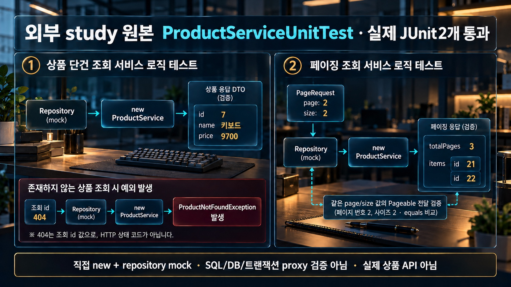

테스트 DB · mock·실제 엔진·test transaction
DB 없는 Service unit은 무엇을 확인했을까?
원문 full Testcontainers class는 compile-only입니다. 외부 원본 unit2와 추가 native MySQL·H2/JPA·Boot TCP/동기 MockMvc 실행을 구분합니다. 원문 OrderHttpTest·학습자 상품 API·MySQL HTTP·Java25는 미실행이며 전체 버전·조건은 추가 근거로 확인합니다.
외부 study 원본 ProductServiceUnitTest2 · 직접 new Service/mock Repository
원본 unit2는 실제 JUnit PASSED입니다. SQL·Spring proxy·DB 엔진·HTTP 상태를 검증한 테스트가 아닙니다.
id7·키보드·9700과 없는id404
원본 unit은 mock Product id7을 키보드·가격9700으로 매핑했습니다. 별도 조회id404는 ProductNotFoundException이며 여기서404는 HTTP 상태 코드가 아닙니다.

지금의 테스트 경계·DB 관찰값
함께 읽을 코드
원문과 추가 실험의 코드 발췌입니다. 강조는 설명하는 위치이며 실시간 실행 줄이 아닙니다.
응답에서 assertion한 id·name·price와 page/items/totalPages만 표시합니다. mock page의 totalElements는 표시하지 않습니다.
추가 실행 검증 로그 보기
최종 frozen 관측의 실제 JSON/PASS 발췌입니다. 원본 unit2는 JUnit PASSED로 구분하며 없는 PASS를 만들지 않습니다. native9·Java28의 고유 ASSERT37개, JUnit22/11classes, facts32는 겹치는 단위이며 독립59실험이 아닙니다. JUnit22에는 관찰기 회귀1개가 포함됩니다. 이전 가변 참조 오류 checkpoint는 쓰지 않습니다.
원문·추가 실험 전체 코드와 실제 검증 근거
이번 최종 범위 정정: native 9개·Java 28개·JUnit 22개·facts 32개를 확인했습니다. 이 수는 서로 겹치는 검증 단위이며 독립 실험 수가 아닙니다. 실제 JDK 21.0.6 추가 환경과 외부 unit 2개 사례를 포함하고, 원문 Testcontainers class는 compile-only입니다. Java 25 원문 환경·Docker·Testcontainers·ServiceConnection runtime은 실행하지 않았습니다. 아래 source.json의 runtimeScope는 이전 준비 시점의 메모이며 native adapter 실행과 최종 replay 이전의 기록입니다. source.json의 원문 status는 역사 자료로 보존합니다.
이번 최종 실행 범위 정정 JSON
{
"title": "V04 최종 실행 범위 정정",
"asOf": "2026-10-24",
"basis": {
"execution": "docs/design/v04-2026-10-20/source-proof/execution.json",
"sourceProof": "docs/design/v04-2026-10-20/source-proof/source.json",
"sourceDocumentSha256": "1fe115e967ba5602aeb8547c93e8a29eed1838549893a8598f90e1b905773cda"
},
"finalCounts": {
"native": 9,
"java": 28,
"junit": 22,
"facts": 32,
"meaning": "Java facts 32개는 native 9개 및 Java 28개 검사와 겹치는 관측 단위이며 독립 실험 수가 아니다. JUnit 22개에는 관찰기 회귀가 포함된다."
},
"executed": [
"Java 21 추가 환경의 native probe와 Java 검사",
"JUnit 22개 사례 모두 통과·skip 없음",
"외부 study 원본 ServiceUnitTest 2개 사례",
"기존 원문 ProductRepositoryTest 전체 클래스는 compile-only",
"추가 native adapter, H2/JPA toy, private MySQL 및 TCP·동기 MockMvc 범위는 execution.json에 기록된 범위"
],
"notExecuted": [
"Java 25 원문 환경",
"원문 ProductRepositoryTest의 runtime 실행",
"Docker·Testcontainers·ServiceConnection runtime",
"원문 전체 애플리케이션 실행"
],
"historicalPreparation": {
"file": "docs/design/v04-2026-10-20/source-proof/source.json",
"runtimeScope": "preparing; source completeTCJava compile-only, partialdomainpatterns not executable as provided; fresh native adapter proposed",
"interpretation": "이 runtimeScope는 native adapter 실행과 최종 replay 이전의 준비 시점 메모다. source.json의 원문 status와 함께 역사 자료로 보존하며 현재 최종 실행 범위로 사용하지 않는다."
},
"limits": [
"native·Java·JUnit·facts 수치는 서로 중첩되는 검증 단위다.",
"원문 Testcontainers·Docker·ServiceConnection과 Java 25는 실행하지 않았다.",
"기존 execution.json 및 raw 결과의 값을 수정하거나 이 범위를 추가 실험으로 만들지 않았다."
]
}원문264줄/9fence는 보존했습니다. 원문 complete ProductRepositoryTest는 그대로 컴파일만 했고, Docker 소켓의 연결 거부로 Testcontainers·Docker·ServiceConnection은 실행하지 않았습니다. 원문 Java 4부분 패턴은 도메인/설정이 생략된 예제입니다. 원문 Kotlin/bash와 외부 starter 명령을 전부 실행한 것이 아닙니다.
외부 study의 Product관련6Java·ServiceUnitTest2케이스·schema/seed는 SHA 사본입니다. 원본unit은 mock Repository와 직접 new한 service를 검사하므로 SQL·Spring proxy·DB 검증이 아닙니다. 원문 RepositoryTest의 assert body2개는 별도 native adapter에서 검증했습니다. 정렬 없는 Page의 관측id는 추가 관찰기가 membership만 정렬 표시했으며 SQL ORDER BY 계약이 아닙니다.
JDK21·Boot4.1.1·Spring7.0.9·DataJPA4.1.1·Hibernate7.4.5.Final·H22.4.240·MySQL8.4.11·Connector/J9.7.0·TC2.0.5·Tomcat11.0.24를 사용했습니다. dependencies.json의132개 artifact는 testRuntimeClasspath·annotationProcessor·compileClasspath 합집합입니다. Java25·원문 실제상품/주문API·MySQL HTTP·TC/Docker/SC 동작·모든콜레이션/잠금/격리수준/성능은 미검증입니다.
매번 0700 run 아래 새 datadir(실측0750)·0700 socket 디렉터리·자체PID·새127.0.0.1port·mysqlxOFF를 확인한 뒤 외부 schema/seed 사본만 적재했습니다. Java는 두 private schema의 SELECT/INSERT/UPDATE/DELETE만 허용한 임시계정과 TLS REQUIRED를 사용했고 암호는 기록하지 않았습니다. 기존 DB·3306·서비스·학습자코드는 사용/수정하지 않았습니다. 자기 MySQL은 정상 종료(exit0)했고 추가 HTTP socket도 worker종료 뒤 닫힘을 확인했습니다.
Boot4.1.1 기본 replace=NON_TEST는 자동 구성 DataSource에서 인식한 test database를 예외로 둡니다. static URL과 DynamicPropertySource URL의 실제 H2/MySQL 차이를 관찰했습니다. explicitNONE이 모든 컨테이너 연결 유지의 보편적인 필수조건이라는 원문 일반화를 보충합니다. @ServiceConnection 예외는 공식 문헌 근거이며 이번 컨테이너 실행 결과가 아닙니다. 네가지 replacement case는 ddl-auto=none으로 엔진 확인 전에 DDL을 실행하지 않았습니다.
native adapter는80상품/active79·첫page10/total79/pages8을 확인했습니다. 전체 seed 모든 값의 전후 동등성을 검사한 것이 아닙니다. 원문SQL의 category9001→product9001은 Spring @Sql에서 실행했고, INFERRED rollback뒤둘다0/ISOLATED는outerrollback뒤둘다1을 관찰했습니다. product→category 각1행삭제와최종9001두테이블0을 확인했습니다. context cache는 cleanup이 아닙니다.
추가 case_probe.word의 cafe/CAFE/café는 MySQL utf8mb4_0900_ai_ci와 H2 MODE=MySQL·DATABASE_TO_LOWER=TRUE의 기본 문자열 조건을 비교했습니다. 각1/1 대0/0, UNIQUE1062/1행 대H2모드2행이었습니다. 모든 H2설정/SQL/함수/락/엔진 또는 성능으로 일반화하지 않습니다.
LearnOrder/DeferredProbe/IdentityProbe/RowListener는 추가 H2/JPA toy이며 실제 주문 도메인·원문Product 저장API가 아닙니다. 바깥 테스트TX의 lazy2문장과 없는경우의1문장+예외, assignedpersist0/flush1과IDENTITYpersist1의CHECK23513을 구분했습니다. 이 counter는 Hibernate 준비문장이고 별도 JDBC observer SQL을 세지 않습니다. flush/commit은 다르며 rollback이 Java 객체 값을 되돌렸다고 주장하지 않습니다.
RowListener는 외부 메일/결제를 보내지 않고 독립 connection으로 commit된행을 읽습니다. flagForCommit은 종료가 아니며 end에서 commit한뒤call1/행1을 관찰했습니다. REQUIRES_NEW는 추가 TransactionTemplate 실험으로 inner73/outer74의 최종행1/0을 확인했습니다. inner73의추가DELETE는실행했지만그영향행수/이후0은별도관측값으로기록하지않았습니다.
실제 TCP1회와 동기 MockMvc1회는 추가 Boot/JDBC/H2 앱의 POST /v04/probe입니다. 실제connector의loopback/port를 확인했습니다. TCP는다른worker/TestManagedTX=false/ApplicationTX=true라테스트marker100을0으로읽고별도commit한201행이테스트rollback뒤에도남았습니다. syncMockMvc는같은thread/TestManagedTX=true로marker110을1로읽으며211쓰기와함께rollback됐습니다. status201과id201을구분하고asyncMVC·원문 OrderHttpTest·실제상품API로확대하지않습니다.
native9/Java28의고유ASSERT37개와JUnit22케이스/11클래스·facts32는겹치는검증단위입니다.59개독립실험으로세지않으며JUnit22에는관찰기회귀1개가포함됩니다. 관찰기의가변list참조가과거값을덮는오류는수정전실패/수정후deep snapshot회귀로교정했고최종freeze/새replay/독립temp실행이모두일치했습니다. 원문TCclass는runtime에서실행하지않았음을별도로검사했습니다.
아래 raw HTTP 자료의 port/PID/threadID는 해당 run의 임시자원식별자이며 API계약이 아닙니다. frozen은 실제비교한same/differentthread·DB행·bind일치값을기록합니다. wire캡처·픽셀전수·학습자이해도는 검증하지 않았습니다. 컨테이너 수명·재사용·기동시간은 공식문헌 설명/미측정 범위로 남깁니다.
원문 SHA·외부 사본·실행 범위
{
"source": "docs/knowledge/V04-test-db-strategy.md",
"sha256": "1fe115e967ba5602aeb8547c93e8a29eed1838549893a8598f90e1b905773cda",
"lines": 264,
"originalBlocks": [
{
"block": 1,
"language": "kotlin",
"file": "block-01.kts",
"sha256": "772ef0c32c9bb70f99e5da418596597a7152ace078bb8f7f95a645d161483d97"
},
{
"block": 2,
"language": "bash",
"file": "block-02.sh",
"sha256": "020beee64b403830d3e3fbd28987cfb48d41eeae4dd23bf414495aef993da9d9"
},
{
"block": 3,
"language": "java",
"file": "block-03.java",
"sha256": "8ea331b2f1871355f36c82ca60cc48609ed42452231a06e429fd7a2f248c3160"
},
{
"block": 4,
"language": "bash",
"file": "block-04.sh",
"sha256": "6e2fc8356d3765a690a982189522a561fe7ba477bffadcdc85516d264f2aa2f0"
},
{
"block": 5,
"language": "sql",
"file": "block-05.sql",
"sha256": "b8a7347ec134e6aee2da387ff7f71454218e31aed1d13ffcac98ecbc2da6592c"
},
{
"block": 6,
"language": "java",
"file": "block-06.java",
"sha256": "3d8ab9cb0b2262bf386168aaf88848a68cc344bb19edd10cd4d6280b62dac0a6"
},
{
"block": 7,
"language": "java",
"file": "block-07.java",
"sha256": "5cf753b468f85a8996517b35141e6b6994b7c5e20497a1b2082ba132eb87f919"
},
{
"block": 8,
"language": "java",
"file": "block-08.java",
"sha256": "2fb85afe510899228bc36e0f6227dda683095bfb9dcabce29f9f3e4f6b58b2b2"
},
{
"block": 9,
"language": "java",
"file": "block-09.java",
"sha256": "89b6b8c8927a34a0708efdffb5c2ae05f5b34afddca480bce413a1c2665a92b2"
}
],
"status": "original completeTCJava compile-only; external original unit2 passes; extra native adapter/sourceassertbody2 +SQLfixture +replacement/enginediff/H2toy/actualTCP+syncMockMvc; observer-corrected full native9/Java28/JUnit22/facts32 frozen replay passed; TC/Docker/ServiceConnection runtime unexecuted",
"externalStudyData": [
{
"source": "/Users/ds/research/java-spring/practice/starter/src/main/java/com/example/practice/product/Product.java",
"copy": "external/java/com/example/practice/product/Product.java",
"sha256": "e7acc9a0738e46fc9fad375f8eb4322fbf3916c5d6f8c639e6a04707660a8eda",
"scope": "external study original support, not learner repo"
},
{
"source": "/Users/ds/research/java-spring/practice/starter/src/main/java/com/example/practice/product/ProductRepository.java",
"copy": "external/java/com/example/practice/product/ProductRepository.java",
"sha256": "de72917102291af62fc95eb8841ed32688315598ad8da2d8f136577214efb175",
"scope": "external study original support, not learner repo"
},
{
"source": "/Users/ds/research/java-spring/practice/starter/src/main/java/com/example/practice/product/ProductService.java",
"copy": "external/java/com/example/practice/product/ProductService.java",
"sha256": "c3491813c23b9ceda1f8783995330f90e944686686c31bad3690dc4ec6b224f3",
"scope": "external study original support, not learner repo"
},
{
"source": "/Users/ds/research/java-spring/practice/starter/src/main/java/com/example/practice/product/ProductResponse.java",
"copy": "external/java/com/example/practice/product/ProductResponse.java",
"sha256": "273646599b516adf952f2b4fc0d7bca790188912f8163a0be9a789e761b55ba6",
"scope": "external study original support, not learner repo"
},
{
"source": "/Users/ds/research/java-spring/practice/starter/src/main/java/com/example/practice/product/ProductPageResponse.java",
"copy": "external/java/com/example/practice/product/ProductPageResponse.java",
"sha256": "4e8ca20fbdb0b6b3d89c0e7fa6743af1a6338dc1d92768773cfda5dbcd5dd0a5",
"scope": "external study original support, not learner repo"
},
{
"source": "/Users/ds/research/java-spring/practice/starter/src/main/java/com/example/practice/product/ProductNotFoundException.java",
"copy": "external/java/com/example/practice/product/ProductNotFoundException.java",
"sha256": "5a891e613712ff2fb951632db87d086b2a30af438cbe4ab927d4db4794b33055",
"scope": "external study original support, not learner repo"
},
{
"source": "/Users/ds/research/java-spring/practice/starter/src/test/java/com/example/practice/product/ProductServiceUnitTest.java",
"copy": "external-test/java/com/example/practice/product/ProductServiceUnitTest.java",
"sha256": "1465e1d9a87daf33174570f46ac4128634839d396a000c32347e91168730f9bc",
"scope": "external study original unit test2; no DB"
},
{
"source": "/Users/ds/research/java-spring/practice/schema/schema.sql",
"copy": "original/external-study-schema.sql",
"sha256": "9d3b0ee42b1206168776ea776804266227fe8c0da845c6e227a1a7184ce8029a",
"scope": "copy only; load after fresh MySQL guard; never existing DB"
},
{
"source": "/Users/ds/research/java-spring/practice/schema/seed.sql",
"copy": "original/external-study-seed.sql",
"sha256": "351eff76376265f524c2da9d78d019176f4379fc0095f2e326f213d4aec71a56",
"scope": "copy only; load after fresh MySQL guard; never existing DB"
}
],
"runtimeScope": "preparing; source completeTCJava compile-only, partialdomainpatterns not executable as provided; fresh native adapter proposed",
"compileFixtureAttempt": "added Gradle annotationProcessor config did not inherit implementation BOM; added same Boot4.1.1 platform to annotationProcessor; no original code changed"
}private MySQL·전용 CRUD/TLS·JUnit/HTTP 종료·frozen 재현
"""V04 source/추가 TestContext 실험을 새 private MySQL에서만 실행한다."""
from pathlib import Path
import argparse,datetime,decimal,hashlib,json,os,re,secrets,socket as net,subprocess,tempfile,time,xml.etree.ElementTree as ET
import pymysql
OUT=Path(__file__).resolve().parent;ROOT=OUT.parents[3]
p=argparse.ArgumentParser();p.add_argument('--mysql-base',required=True);p.add_argument('--runtime-root',required=True);p.add_argument('--freeze',action='store_true');a=p.parse_args()
BASE=Path(a.mysql_base).resolve();runtime=Path(a.runtime_root).resolve();runtime.mkdir(parents=True,exist_ok=True)
meta=json.loads((OUT/'source.json').read_text());source=ROOT/meta['source'];assert hashlib.sha256(source.read_bytes()).hexdigest()==meta['sha256']
blocks=re.findall(r'^[ \t]*```(\w+)[ \t]*\n(.*?)^[ \t]*```[ \t]*$',source.read_text(),re.M|re.S);assert len(blocks)==9
for (lang,body),e in zip(blocks,meta['originalBlocks'],strict=True):assert lang==e['language']and body.encode()==(OUT/'original'/e['file']).read_bytes()and hashlib.sha256(body.encode()).hexdigest()==e['sha256']
assert (OUT/'original/block-03.java').read_bytes()==(OUT/'original-test/java/com/example/practice/product/ProductRepositoryTest.java').read_bytes()
assert (OUT/'original/block-05.sql').read_bytes()==(OUT/'test-resources/sql/product-fixture.sql').read_bytes()
for e in meta['externalStudyData']:assert hashlib.sha256((OUT/e['copy']).read_bytes()).hexdigest()==e['sha256']and hashlib.sha256(Path(e['source']).read_bytes()).hexdigest()==e['sha256']
run=Path(tempfile.mkdtemp(prefix='run-',dir=runtime));os.chmod(run,0o700);short=Path(tempfile.mkdtemp(prefix='v04-mysql-',dir='/tmp'));os.chmod(short,0o700)
data=run/'data';sock=short/'mysql.sock';log=run/'server.log';pid=run/'mysqld.pid'
with net.socket()as s:s.bind(('127.0.0.1',0));port=s.getsockname()[1]
common=[str(BASE/'bin/mysqld'),'--no-defaults',f'--basedir={BASE}',f'--datadir={data}']
r=subprocess.run(common+['--initialize-insecure'],capture_output=True,text=True);(run/'initialize.log').write_text(r.stdout+r.stderr);assert r.returncode==0,r.stderr
args=common+[f'--socket={sock}',f'--pid-file={pid}',f'--log-error={log}',f'--port={port}','--bind-address=127.0.0.1','--mysqlx=OFF','--innodb-buffer-pool-size=64M','--mysql-native-password=OFF','--default-time-zone=+00:00']
server=subprocess.Popen(args,stdout=(run/'stdout.log').open('w'),stderr=subprocess.STDOUT)
root_password=secrets.token_urlsafe(32);jdbc_password=secrets.token_urlsafe(32);writer=None
result={'runtime':{},'source':{},'java':{},'junit':[],'checks':[]};trace=[]
def clean(v):
if isinstance(v,dict):return {k:clean(x)for k,x in v.items()}
if isinstance(v,(tuple,list)):return [clean(x)for x in v]
if isinstance(v,decimal.Decimal):return str(v)
if isinstance(v,datetime.datetime):return v.isoformat(sep=' ')
return v
def connect(password):return pymysql.connect(unix_socket=str(sock),user='root',password=password,charset='utf8mb4',autocommit=True,cursorclass=pymysql.cursors.DictCursor)
def sql(q):
with writer.cursor()as c:n=c.execute(q);r={'sql':q,'rows':clean(c.fetchall())if c.description else None,'affectedRows':None if c.description else n}
trace.append(r);return r
def rows(q):return sql(q)['rows']
def check(name,value):assert value,name;result['checks'].append(name);print('PASS '+name,flush=True)
try:
deadline=time.monotonic()+30
while time.monotonic()<deadline:
if server.poll()is not None:raise RuntimeError(log.read_text())
if sock.exists():
try:writer=connect('');break
except pymysql.MySQLError:pass
time.sleep(.1)
assert writer,'private instance timeout'
guard=rows('SELECT @@datadir AS datadir,@@socket AS socket,@@port AS port,@@bind_address AS bindAddress,@@skip_networking AS skipNetworking')
assert Path(guard[0]['datadir']).resolve()==data.resolve()and Path(guard[0]['socket']).resolve()==sock.resolve()and guard[0]['port']==port and guard[0]['bindAddress']=='127.0.0.1'and guard[0]['skipNetworking']==0 and int(pid.read_text())==server.pid
x=rows("SELECT PLUGIN_NAME,PLUGIN_STATUS FROM information_schema.plugins WHERE PLUGIN_NAME='mysqlx'");assert x==[]or x[0]['PLUGIN_STATUS']=='DISABLED'
(run/'isolation.json').write_text(json.dumps({'pid':server.pid,'arguments':args,'guard':guard,'mysqlx':x,'socketMode':oct(short.stat().st_mode&0o777),'passwords':'fresh eachrun not recorded; new JDBC CRUD on two private schemas only'},indent=2)+'\n');trace.clear()
with writer.cursor()as c:c.execute("ALTER USER 'root'@'localhost' IDENTIFIED BY %s",(root_password,))
client=[str(BASE/'bin/mysql'),'--no-defaults','--no-login-paths','--protocol=SOCKET',f'--socket={sock}','-uroot','--default-character-set=utf8mb4'];client_env=os.environ.copy();client_env['MYSQL_PWD']=root_password
for name in ['external-study-schema.sql','external-study-seed.sql']:
r=subprocess.run(client,input=(OUT/'original'/name).read_text(),env=client_env,capture_output=True,text=True);(run/(name+'.log')).write_text(r.stdout+r.stderr);assert r.returncode==0,r.stderr
sql('CREATE DATABASE v04_extra CHARACTER SET utf8mb4 COLLATE utf8mb4_0900_ai_ci');sql('CREATE TABLE v04_extra.case_probe(id INT PRIMARY KEY,word VARCHAR(30) NOT NULL UNIQUE)')
result['runtime']=rows('SELECT VERSION()AS mysql,@@version_compile_machine AS machine,@@version_compile_os AS os,@@sql_mode AS sqlMode,@@autocommit AS autocommit,@@transaction_isolation AS isolation,@@time_zone AS timeZone')[0];check('private-native-mysql8.4.11',result['runtime']['mysql']=='8.4.11')
before=rows('SELECT COUNT(*)AS total,SUM(deleted_at IS NULL)AS active FROM ds_practice.product')[0];check('source-seed-products80-active79',before=={'total':80,'active':'79'});result['source']['before']=before
with writer.cursor()as c:
c.execute("CREATE USER 'v04_probe'@'127.0.0.1' IDENTIFIED BY %s",(jdbc_password,))
for schema in ['ds_practice','v04_extra']:c.execute(f"GRANT SELECT,INSERT,UPDATE,DELETE ON {schema}.* TO 'v04_probe'@'127.0.0.1'")
env=os.environ.copy();env.update(JAVA_HOME='/Users/ds/Library/Java/JavaVirtualMachines/corretto-21.0.6/Contents/Home',V04_DB_URL=f'jdbc:mysql://127.0.0.1:{port}/ds_practice?characterEncoding=UTF-8&sslMode=REQUIRED&useServerPrepStmts=true',V04_DB_PASSWORD=jdbc_password,V04_EXPECTED_DATADIR=str(data),V04_EXPECTED_PORT=str(port),V04_JAVA_OUTPUT=str(run/'java.json'),V04_RUNTIME_DIR=str(run))
r=subprocess.run([str(ROOT/'gradlew'),'-p',str(OUT/'runtime'),'--no-daemon','--console=plain','cleanTest','test','recordDependencies'],cwd=ROOT,env=env,capture_output=True,text=True);(OUT/'java-run.log').write_text(r.stdout+r.stderr);assert r.returncode==0,'Java suite failed; see source-proof/java-run.log'
listener=json.loads((run/'http-listener.json').read_text());assert listener['address']=='127.0.0.1'
with net.socket()as probe:probe.settimeout(2);http_closed=probe.connect_ex(('127.0.0.1',listener['port']))!=0
(run/'http-stop-check.json').write_text(json.dumps({'listener':listener,'tcpClosedAfterWorkerExit':http_closed},indent=2)+'\n');check('private-http-server-stopped',http_closed)
result['java']=json.loads((run/'java.json').read_text());passes=re.findall(r'(?m)^\s*PASS ([^\r\n]+)$',r.stdout);check('java-explicit-checks-match-stdout',sorted(passes)==result['java']['checks']and len(passes)==len(set(passes)))
for file in sorted((OUT/'runtime/build/test-results/test').glob('TEST-*.xml')):
xml=ET.parse(file).getroot()
for case in xml.findall('testcase'):
result['junit'].append({'class':case.attrib['classname'],'method':case.attrib['name'],'passed':case.find('failure')is None and case.find('error')is None,'skipped':case.find('skipped')is not None})
(run/file.name).write_bytes(file.read_bytes())
expected_ids=set();expected_records=set()
for file in (OUT/'probe/java').rglob('*.java'):
text=file.read_text();expected_ids.update(re.findall(r'Proof\.check\("([^"]+)"',text));expected_records.update(re.findall(r'Proof\.record\("([^"]+)"',text))
check('java-check-and-fact-ids-cover-declared-probes',set(result['java']['checks'])==expected_ids and set(result['java']['facts'])==expected_ids|expected_records)
expected_classes={'com.example.practice.product.DefaultStaticReplaceTest':1,'com.example.practice.product.DefaultDynamicReplaceTest':1,'com.example.practice.product.ExplicitNoneReplaceTest':1,'com.example.practice.product.ExplicitAnyReplaceTest':1,'com.example.practice.product.NativeAdapterTest':2,'com.example.practice.product.SqlFixtureTest':2,'com.example.practice.product.ProductServiceUnitTest':2,'v04.extra.EngineDifferentialTest':1,'v04.toy.ToyTransactionTest':8,'v04.http.HttpBoundaryTest':2,'v04.support.ObservationSnapshotTest':1}
actual_classes={name:sum(c['class']==name for c in result['junit'])for name in {c['class']for c in result['junit']}};check('junit-exact22-cases-in11-expected-classes',actual_classes==expected_classes)
result['junit'].sort(key=lambda c:(c['class'],c['method']));check('junit-all-discovered-cases-pass-no-skips',bool(result['junit'])and all(c['passed']and not c['skipped']for c in result['junit']));check('source-tc-class-not-run',all(c['class']!='com.example.practice.product.ProductRepositoryTest'for c in result['junit']))
after=rows('SELECT COUNT(*)AS total,SUM(deleted_at IS NULL)AS active FROM ds_practice.product')[0];fixture=rows('SELECT(SELECT COUNT(*)FROM ds_practice.product WHERE id=9001)AS product,(SELECT COUNT(*)FROM ds_practice.category WHERE id=9001)AS category')[0];result['source'].update(after=after,fixtureAfter=fixture);check('source-seed-row-counts-preserved-fixture-cleaned',after==before and fixture=={'product':0,'category':0})
result['trace']=trace;(OUT/'execution.json').write_text(json.dumps(result,ensure_ascii=False,indent=2)+'\n');frozen=OUT/'checkpoints/expected-current-execution.json'
if a.freeze:frozen.parent.mkdir(exist_ok=True);frozen.write_bytes((OUT/'execution.json').read_bytes())
else:assert json.loads(frozen.read_text())==result,'frozen differs; investigate before updating'
print(json.dumps({'nativeChecks':len(result['checks']),'javaChecks':len(result['java']['checks']),'junitCases':len(result['junit']),'observations':len(result['java']['facts']),'privateRuntime':str(run),'frozenMatch':not a.freeze},indent=2))
finally:
if writer:
writer.close();env=os.environ.copy();env['MYSQL_PWD']=root_password
r=subprocess.run([str(BASE/'bin/mysqladmin'),'--no-defaults','--no-login-paths','--protocol=SOCKET',f'--socket={sock}','-uroot','shutdown'],env=env,capture_output=True,text=True,timeout=15);(run/'shutdown.log').write_text(r.stdout+r.stderr)
try:server.wait(timeout=15)
except subprocess.TimeoutExpired:server.terminate();server.wait(timeout=10)
(OUT/'runtime-last.json').write_text(json.dumps({'run':str(run),'pid':server.pid,'serverExit':server.returncode,'serverStopped':server.poll()is not None},indent=2)+'\n')
원문 TC Java 그대로 · 컴파일만
package com.example.practice.product;
import org.junit.jupiter.api.Test;
import org.springframework.beans.factory.annotation.Autowired;
import org.springframework.boot.data.jpa.test.autoconfigure.DataJpaTest;
import org.springframework.boot.jdbc.test.autoconfigure.AutoConfigureTestDatabase;
import org.springframework.boot.testcontainers.service.connection.ServiceConnection;
import org.springframework.data.domain.Page;
import org.springframework.data.domain.PageRequest;
import org.testcontainers.junit.jupiter.Container;
import org.testcontainers.junit.jupiter.Testcontainers;
import org.testcontainers.mysql.MySQLContainer;
import static org.assertj.core.api.Assertions.assertThat;
@Testcontainers
@DataJpaTest(properties = {"spring.sql.init.mode=always",
"spring.sql.init.schema-locations=file:../schema/schema.sql,file:../schema/seed.sql"})
@AutoConfigureTestDatabase(replace = AutoConfigureTestDatabase.Replace.NONE)
class ProductRepositoryTest {
@Container @ServiceConnection
static final MySQLContainer mysql = new MySQLContainer("mysql:8.4")
.withDatabaseName("ds_practice").withUsername("practice").withPassword("practice");
@Autowired ProductRepository productRepository;
@Test
void excludesSoftDeletedProduct() {
assertThat(productRepository.findByIdAndDeletedAtIsNull(1L)).isPresent();
assertThat(productRepository.findByIdAndDeletedAtIsNull(80L)).isEmpty();
}
@Test
void countsActiveProductsWithMysql() {
Page<Product> page = productRepository.findAllByDeletedAtIsNull(PageRequest.of(0, 10));
assertThat(page.getContent()).hasSize(10);
assertThat(page.getTotalElements()).isEqualTo(79);
assertThat(page.getTotalPages()).isEqualTo(8);
}
}
외부 study 원본 서비스 unit2케이스
package com.example.practice.product;
import java.math.BigDecimal;
import java.util.List;
import java.util.Optional;
import org.junit.jupiter.api.Test;
import org.springframework.data.domain.PageImpl;
import org.springframework.data.domain.PageRequest;
import static org.assertj.core.api.Assertions.*;
import static org.mockito.BDDMockito.given;
import static org.mockito.Mockito.*;
class ProductServiceUnitTest {
private final ProductRepository repository = mock(ProductRepository.class);
private final ProductService service = new ProductService(repository);
@Test
void mapsResponseAndThrowsForMissingProduct() {
Product found = product(7L, "키보드");
given(repository.findByIdAndDeletedAtIsNull(7L)).willReturn(Optional.of(found));
given(repository.findByIdAndDeletedAtIsNull(404L)).willReturn(Optional.empty());
ProductResponse response = service.getById(7L);
assertThat(response.id()).isEqualTo(7L);
assertThat(response.name()).isEqualTo("키보드");
assertThat(response.price()).isEqualByComparingTo("9700");
assertThatThrownBy(() -> service.getById(404L))
.isInstanceOf(ProductNotFoundException.class).hasMessage("Product 404 was not found");
}
@Test
void mapsPageAndDelegatesPageable() {
var request = PageRequest.of(2, 2);
// 상품 mock을 먼저 만든다. willReturn(...) 인자 안에서 product()를 부르면 그 안의 given()이
// 바깥 stubbing이 끝나기 전에 실행돼 UnfinishedStubbingException이 난다(검증 중 실제로 겪음).
var first = product(21L, "첫 상품");
var second = product(22L, "둘째 상품");
given(repository.findAllByDeletedAtIsNull(request))
.willReturn(new PageImpl<>(List.of(first, second), request, 5));
ProductPageResponse response = service.getPage(2, 2);
assertThat(response.items()).extracting(ProductResponse::id).containsExactly(21L, 22L);
assertThat(response.page()).isEqualTo(2);
assertThat(response.totalPages()).isEqualTo(3);
verify(repository).findAllByDeletedAtIsNull(request);
}
private static Product product(Long id, String name) {
Product p = mock(Product.class);
given(p.getId()).willReturn(id);
given(p.getName()).willReturn(name);
given(p.getPrice()).willReturn(new BigDecimal("9700"));
return p;
}
}
추가 관찰기 · 기록시점 deep snapshot
package v04.support;
import java.io.File;
import java.sql.*;
import java.util.*;
import javax.sql.DataSource;
import org.springframework.jdbc.datasource.DriverManagerDataSource;
import tools.jackson.databind.json.JsonMapper;
/** 새 격리 실험의 관찰 저장기. URL·암호·임시port/datadir를 결과에 기록하지 않는다. */
public final class Proof {
private static final SortedMap<String,Map<String,Object>> facts=new TreeMap<>();
private static final SortedSet<String> checks=new TreeSet<>();
private Proof(){}
public static Map<String,Object> map(Object... pairs){Map<String,Object> m=new LinkedHashMap<>();for(int i=0;i<pairs.length;i+=2)m.put((String)pairs[i],pairs[i+1]);return m;}
public static synchronized void check(String id,boolean pass,Map<String,Object> value){if(!pass)throw new AssertionError(id+" "+value);checks.add(id);record(id,value);System.out.println("PASS "+id);}
public static synchronized void record(String id,Map<String,Object> value){
Map<String,Object> detached=JsonMapper.builder().build().convertValue(value,Map.class);
if(facts.putIfAbsent(id,detached)!=null)throw new AssertionError("duplicate observation "+id);
String path=System.getenv("V04_JAVA_OUTPUT");if(path==null)throw new IllegalStateException("V04 private runner environment required");
JsonMapper.builder().build().writeValue(new File(path),map("checks",new ArrayList<>(checks),"facts",facts));
}
public static String url(){String value=System.getenv("V04_DB_URL");if(value==null||!value.matches("jdbc:mysql://127\\.0\\.0\\.1:[0-9]+/ds_practice\\?.*"))throw new IllegalStateException("fresh private loopback URL required");return value;}
public static String password(){return Objects.requireNonNull(System.getenv("V04_DB_PASSWORD"));}
public static DriverManagerDataSource mysql(){DriverManagerDataSource ds=new DriverManagerDataSource(url(),"v04_probe",password());guard(ds);return ds;}
public static void guard(DataSource ds){
try(Connection c=ds.getConnection();Statement s=c.createStatement();ResultSet rs=s.executeQuery("SELECT @@datadir,@@port,@@bind_address")){
rs.next();if(!new File(rs.getString(1)).getCanonicalFile().equals(new File(System.getenv("V04_EXPECTED_DATADIR")).getCanonicalFile())||rs.getInt(2)!=Integer.parseInt(System.getenv("V04_EXPECTED_PORT"))||!rs.getString(3).equals("127.0.0.1"))throw new AssertionError("private datadir/port/bind guard");
}catch(Exception e){throw new IllegalStateException("fresh MySQL guard failed",e);}
}
public static Map<String,Object> engine(DataSource ds){
try(Connection c=ds.getConnection()){
DatabaseMetaData m=c.getMetaData();return map("engine",m.getDatabaseProductName(),"version",m.getDatabaseProductVersion(),"dataSourceClass",ds.getClass().getName());
}catch(SQLException e){throw new IllegalStateException(e);}
}
public static Map<String,Object> sqlError(Throwable t){
for(Throwable p=t;p!=null;p=p.getCause())if(p instanceof SQLException e)return map("type",e.getClass().getName(),"code",e.getErrorCode(),"state",e.getSQLState());
return map("type",t.getClass().getName());
}
}
추가 native adapter · 원문 assert body2개
package com.example.practice.product;
import javax.sql.DataSource;
import org.junit.jupiter.api.Test;
import org.springframework.beans.factory.annotation.Autowired;
import org.springframework.boot.data.jpa.test.autoconfigure.DataJpaTest;
import org.springframework.boot.jdbc.test.autoconfigure.AutoConfigureTestDatabase;
import org.springframework.data.domain.Page;
import org.springframework.data.domain.PageRequest;
import org.springframework.test.context.ContextConfiguration;
import com.example.practice.ProofJpaApp;
import v04.support.Proof;
import static org.assertj.core.api.Assertions.assertThat;
/** 추가 native 연결 adapter다. 원문 assert body만 그대로 복사했고 TC 원문 class 실행이 아니다. */
@DataJpaTest(properties={"spring.jpa.hibernate.ddl-auto=validate","spring.sql.init.mode=never","spring.jpa.show-sql=false","logging.level.root=ERROR","spring.datasource.hikari.maximum-pool-size=2","spring.datasource.hikari.minimum-idle=0"})
@ContextConfiguration(classes=ProofJpaApp.class)
@AutoConfigureTestDatabase(replace=AutoConfigureTestDatabase.Replace.NONE)
class NativeAdapterTest extends NativeProperties {
@Autowired ProductRepository productRepository;
@Autowired DataSource ds;
@Test void excludesSoftDeletedProduct(){
assertThat(productRepository.findByIdAndDeletedAtIsNull(1L)).isPresent();
assertThat(productRepository.findByIdAndDeletedAtIsNull(80L)).isEmpty();
Proof.guard(ds);Proof.record("adapter-source-finder-assert-body",Proof.map("product1Present",productRepository.findByIdAndDeletedAtIsNull(1L).isPresent(),"product80Present",productRepository.findByIdAndDeletedAtIsNull(80L).isPresent(),"engine",Proof.engine(ds)));
}
@Test void countsActiveProductsWithMysql(){
Page<Product> page = productRepository.findAllByDeletedAtIsNull(PageRequest.of(0, 10));
assertThat(page.getContent()).hasSize(10);
assertThat(page.getTotalElements()).isEqualTo(79);
assertThat(page.getTotalPages()).isEqualTo(8);
Proof.guard(ds);Proof.record("adapter-source-page-assert-body",Proof.map("content",page.getContent().size(),"total",page.getTotalElements(),"pages",page.getTotalPages(),"idsUnordered",page.getContent().stream().map(Product::getId).sorted().toList()));
}
}
추가 replace4조합
package com.example.practice.product;
import javax.sql.DataSource;
import java.util.Map;
import org.junit.jupiter.api.Test;
import org.springframework.beans.factory.annotation.Autowired;
import org.springframework.boot.data.jpa.test.autoconfigure.DataJpaTest;
import org.springframework.boot.jdbc.test.autoconfigure.AutoConfigureTestDatabase;
import org.springframework.test.context.ContextConfiguration;
import org.springframework.test.context.TestPropertySource;
import com.example.practice.ProofJpaApp;
import v04.support.Proof;
// 모든 교체 사례는 ddl-auto=none으로 실제 연결을 확인하기 전 DDL을 실행하지 않는다.
@DataJpaTest(properties={"spring.jpa.hibernate.ddl-auto=none","spring.sql.init.mode=never","spring.jpa.show-sql=false","logging.level.root=ERROR","spring.datasource.hikari.maximum-pool-size=2","spring.datasource.hikari.minimum-idle=0"})
@ContextConfiguration(classes=ProofJpaApp.class)
@TestPropertySource(properties={"spring.datasource.url=${V04_DB_URL}","spring.datasource.username=v04_probe","spring.datasource.password=${V04_DB_PASSWORD}"})
class DefaultStaticReplaceTest {
@Autowired DataSource ds;
@Test void staticUrlDefaultNonTestUsesH2()throws Exception{
Object value=AutoConfigureTestDatabase.class.getDeclaredMethod("replace").getDefaultValue();Map<String,Object> facts=Proof.engine(ds);facts.put("annotationDefault",value.toString());
Proof.check("replace-default-static-is-h2",value.toString().equals("NON_TEST")&&facts.get("engine").equals("H2"),facts);
}
}
@DataJpaTest(properties={"spring.jpa.hibernate.ddl-auto=none","spring.sql.init.mode=never","spring.jpa.show-sql=false","logging.level.root=ERROR","spring.datasource.hikari.maximum-pool-size=2","spring.datasource.hikari.minimum-idle=0"})
@ContextConfiguration(classes=ProofJpaApp.class)
class DefaultDynamicReplaceTest extends NativeProperties {
@Autowired DataSource ds;
@Test void dynamicUrlDefaultNonTestKeepsMySQL(){Proof.guard(ds);Map<String,Object> facts=Proof.engine(ds);facts.put("origin","DynamicPropertySource URL, not Testcontainers");Proof.check("replace-default-dynamic-keeps-mysql",facts.get("engine").equals("MySQL"),facts);}
}
@DataJpaTest(properties={"spring.jpa.hibernate.ddl-auto=none","spring.sql.init.mode=never","spring.jpa.show-sql=false","logging.level.root=ERROR","spring.datasource.hikari.maximum-pool-size=2","spring.datasource.hikari.minimum-idle=0"})
@ContextConfiguration(classes=ProofJpaApp.class)
@AutoConfigureTestDatabase(replace=AutoConfigureTestDatabase.Replace.NONE)
@TestPropertySource(properties={"spring.datasource.url=${V04_DB_URL}","spring.datasource.username=v04_probe","spring.datasource.password=${V04_DB_PASSWORD}"})
class ExplicitNoneReplaceTest {
@Autowired DataSource ds;
@Test void explicitNoneKeepsStaticMySQL(){Proof.guard(ds);Map<String,Object> facts=Proof.engine(ds);facts.put("replace","NONE");Proof.check("replace-none-static-keeps-mysql",facts.get("engine").equals("MySQL"),facts);}
}
@DataJpaTest(properties={"spring.jpa.hibernate.ddl-auto=none","spring.sql.init.mode=never","spring.jpa.show-sql=false","logging.level.root=ERROR","spring.datasource.hikari.maximum-pool-size=2","spring.datasource.hikari.minimum-idle=0"})
@ContextConfiguration(classes=ProofJpaApp.class)
@AutoConfigureTestDatabase(replace=AutoConfigureTestDatabase.Replace.ANY)
class ExplicitAnyReplaceTest extends NativeProperties {
@Autowired DataSource ds;
@Test void explicitAnyReplacesDynamicWithH2(){Map<String,Object> facts=Proof.engine(ds);facts.put("replace","ANY");Proof.check("replace-any-dynamic-is-h2",facts.get("engine").equals("H2"),facts);}
}
추가 @Sql INFERRED·ISOLATED·정리
package com.example.practice.product;
import javax.sql.DataSource;
import org.junit.jupiter.api.Test;
import org.springframework.beans.factory.annotation.Autowired;
import org.springframework.boot.data.jpa.test.autoconfigure.DataJpaTest;
import org.springframework.boot.jdbc.test.autoconfigure.AutoConfigureTestDatabase;
import org.springframework.jdbc.core.JdbcTemplate;
import org.springframework.test.context.ContextConfiguration;
import org.springframework.test.context.jdbc.Sql;
import org.springframework.test.context.jdbc.SqlConfig;
import org.springframework.test.context.transaction.TestTransaction;
import com.example.practice.ProofJpaApp;
import v04.support.Proof;
import static org.assertj.core.api.Assertions.assertThat;
@DataJpaTest(properties={"spring.jpa.hibernate.ddl-auto=validate","spring.sql.init.mode=never","spring.jpa.show-sql=false","logging.level.root=ERROR","spring.datasource.hikari.maximum-pool-size=2","spring.datasource.hikari.minimum-idle=0"})
@ContextConfiguration(classes=ProofJpaApp.class)
@AutoConfigureTestDatabase(replace=AutoConfigureTestDatabase.Replace.NONE)
class SqlFixtureTest extends NativeProperties {
@Autowired ProductRepository productRepository;
@Autowired DataSource ds;
@Test @Sql("/sql/product-fixture.sql")
void inferredJoinsTestRollback(){
assertThat(productRepository.findByIdAndDeletedAtIsNull(9001L)).isPresent();
boolean active=TestTransaction.isActive();TestTransaction.end();
JdbcTemplate jdbc=new JdbcTemplate(ds);int product=jdbc.queryForObject("SELECT COUNT(*)FROM product WHERE id=9001",Integer.class),category=jdbc.queryForObject("SELECT COUNT(*)FROM category WHERE id=9001",Integer.class);
Proof.check("sql-inferred-fixture-rolled-back",active&&product==0&&category==0,Proof.map("activeBeforeEnd",active,"productAfterRollback",product,"categoryAfterRollback",category));
}
@Test @Sql(scripts="/sql/product-fixture.sql",config=@SqlConfig(transactionMode=SqlConfig.TransactionMode.ISOLATED))
void isolatedCommitNeedsCleanup(){
assertThat(productRepository.findByIdAndDeletedAtIsNull(9001L)).isPresent();TestTransaction.end();JdbcTemplate jdbc=new JdbcTemplate(ds);
int product=jdbc.queryForObject("SELECT COUNT(*)FROM product WHERE id=9001",Integer.class),category=jdbc.queryForObject("SELECT COUNT(*)FROM category WHERE id=9001",Integer.class);
Proof.check("sql-isolated-fixture-survives-test-rollback",product==1&&category==1,Proof.map("productAfterTestRollback",product,"categoryAfterTestRollback",category));
int deletedProduct=jdbc.update("DELETE FROM product WHERE id=9001"),deletedCategory=jdbc.update("DELETE FROM category WHERE id=9001");
Proof.check("sql-isolated-explicit-child-first-cleanup",deletedProduct==1&&deletedCategory==1&&jdbc.queryForObject("SELECT COUNT(*)FROM product WHERE id=9001",Integer.class)==0,Proof.map("deletedProduct",deletedProduct,"deletedCategory",deletedCategory,"productAfterCleanup",jdbc.queryForObject("SELECT COUNT(*)FROM product WHERE id=9001",Integer.class)));
}
}
원문 fixture SQL2문장
INSERT INTO category (id, name, depth, sort_order, created_at, updated_at)
VALUES (9001, '테스트 분류', 1, 1, '2026-09-01 00:00:00', '2026-09-01 00:00:00');
INSERT INTO product (id, category_id, name, product_type, price, stock, sale_status, created_at, updated_at)
VALUES (9001, 9001, '테스트 상품', 'GOODS', 12000, 3, 'ON_SALE', '2026-09-01 00:00:00', '2026-09-01 00:00:00');
추가 두 엔진 문자열·UNIQUE 대조
package v04.extra;
import javax.sql.DataSource;
import java.util.Map;
import org.junit.jupiter.api.Test;
import org.springframework.dao.DataIntegrityViolationException;
import org.springframework.jdbc.core.JdbcTemplate;
import org.springframework.jdbc.datasource.DriverManagerDataSource;
import v04.support.Proof;
import static org.junit.jupiter.api.Assertions.assertThrows;
/** 같은 문자열 입력을 두 엔진의 명시한 기본 collation 조건에서 비교한다. */
class EngineDifferentialTest {
@Test void mysqlModeDoesNotCopyMysqlCollation(){
DataSource mysql=Proof.mysql();DriverManagerDataSource h2=new DriverManagerDataSource("jdbc:h2:mem:v04_engine;MODE=MySQL;DATABASE_TO_LOWER=TRUE;DB_CLOSE_DELAY=-1","sa","");
JdbcTemplate m=new JdbcTemplate(mysql),h=new JdbcTemplate(h2);
h.execute("CREATE SCHEMA v04_extra");h.execute("CREATE TABLE v04_extra.case_probe(id INT PRIMARY KEY,word VARCHAR(30) NOT NULL UNIQUE)");
m.update("DELETE FROM v04_extra.case_probe");
for(JdbcTemplate jdbc:new JdbcTemplate[]{m,h})jdbc.update("INSERT INTO v04_extra.case_probe VALUES(1,'cafe')");
String caseSql="SELECT CASE WHEN word='CAFE' THEN 1 ELSE 0 END FROM v04_extra.case_probe WHERE id=1",accentSql="SELECT CASE WHEN word='café' THEN 1 ELSE 0 END FROM v04_extra.case_probe WHERE id=1";
int mysqlCase=m.queryForObject(caseSql,Integer.class),h2Case=h.queryForObject(caseSql,Integer.class),mysqlAccent=m.queryForObject(accentSql,Integer.class),h2Accent=h.queryForObject(accentSql,Integer.class);
String collation=m.queryForObject("SELECT COLLATION_NAME FROM information_schema.columns WHERE table_schema='v04_extra'AND table_name='case_probe'AND column_name='word'",String.class);
Proof.check("engine-same-comparison-mysql-ai-ci-vs-h2-mode",mysqlCase==1&&mysqlAccent==1&&h2Case==0&&h2Accent==0,Proof.map("mysqlCase",mysqlCase,"mysqlAccent",mysqlAccent,"h2ModeCase",h2Case,"h2ModeAccent",h2Accent,"mysqlColumnCollation",collation,"h2Settings","MODE=MySQL;DATABASE_TO_LOWER=TRUE; no IGNORECASE/collation override","caseSql",caseSql,"accentSql",accentSql));
DataIntegrityViolationException duplicate=assertThrows(DataIntegrityViolationException.class,()->m.update("INSERT INTO v04_extra.case_probe VALUES(2,'café')"));h.update("INSERT INTO v04_extra.case_probe VALUES(2,'café')");
int mysqlRows=m.queryForObject("SELECT COUNT(*)FROM v04_extra.case_probe",Integer.class),h2Rows=h.queryForObject("SELECT COUNT(*)FROM v04_extra.case_probe",Integer.class);Map<String,Object> error=Proof.sqlError(duplicate);
Proof.check("engine-unique-accent-native1062-vs-h2-two",error.get("code").equals(1062)&&mysqlRows==1&&h2Rows==2,Proof.map("mysqlError",error,"mysqlRows",mysqlRows,"h2ModeRows",h2Rows,"mysqlEngine",Proof.engine(mysql),"h2Engine",Proof.engine(h2)));
int cleaned=m.update("DELETE FROM v04_extra.case_probe");Proof.check("engine-private-probe-cleaned",cleaned==1,Proof.map("mysqlDeletedRows",cleaned));
}
}
추가 H2/JPA 모델·service·RowListener 구성
package v04.toy;
import javax.sql.DataSource;
import jakarta.persistence.EntityManager;
import jakarta.persistence.EntityManagerFactory;
import org.springframework.context.annotation.*;
import org.springframework.jdbc.core.JdbcTemplate;
import org.springframework.jdbc.datasource.DriverManagerDataSource;
import org.springframework.orm.jpa.*;
import org.springframework.orm.jpa.vendor.HibernateJpaVendorAdapter;
import org.springframework.transaction.annotation.*;
import org.springframework.transaction.event.*;
import java.util.*;
import java.sql.*;
import v04.support.Proof;
@Configuration @EnableTransactionManagement(proxyTargetClass=true)
public class ToyConfig {
@Bean DataSource dataSource(){return new DriverManagerDataSource("jdbc:h2:mem:v04_tx;DB_CLOSE_DELAY=-1","sa","");}
@Bean LocalContainerEntityManagerFactoryBean entityManagerFactory(DataSource ds){
var bean=new LocalContainerEntityManagerFactoryBean();bean.setDataSource(ds);bean.setPackagesToScan("v04.toy");bean.setJpaVendorAdapter(new HibernateJpaVendorAdapter());
bean.setJpaPropertyMap(Map.of("hibernate.hbm2ddl.auto","create-drop","hibernate.generate_statistics","true","hibernate.cache.use_second_level_cache","false","hibernate.cache.use_query_cache","false"));return bean;
}
@Bean JpaTransactionManager transactionManager(EntityManagerFactory emf){return new JpaTransactionManager(emf);}
@Bean ToyService toyService(EntityManagerFactory emf){return new ToyService(SharedEntityManagerCreator.createSharedEntityManager(emf));}
@Bean RowListener rowListener(DataSource ds){return new RowListener(ds);}
public static class ToyService {
private final EntityManager em;
ToyService(EntityManager em){this.em=em;}
@Transactional(readOnly=true) public LearnOrder getEntity(long id){return em.find(LearnOrder.class,id);}
}
public record Created(int id){}
public static class RowListener {
final DataSource ds;final List<Map<String,Object>> calls=new ArrayList<>();
RowListener(DataSource ds){this.ds=ds;}
@TransactionalEventListener(phase=TransactionPhase.AFTER_COMMIT)
public void afterCommit(Created event)throws SQLException{
// Spring 바인딩 연결과 별도 connection에서 실제 commit된 행을 관찰한다.
try(Connection c=ds.getConnection();PreparedStatement p=c.prepareStatement("SELECT COUNT(*)FROM event_probe WHERE id=?")){
p.setInt(1,event.id());try(ResultSet r=p.executeQuery()){r.next();calls.add(Proof.map("id",event.id(),"independentConnectionRows",r.getInt(1)));}
}
}
}
}
추가 테스트TX·lazy·flush·commit·REQUIRES_NEW 검사
package v04.toy;
import javax.sql.DataSource;
import jakarta.persistence.*;
import org.hibernate.Hibernate;
import org.hibernate.LazyInitializationException;
import org.hibernate.SessionFactory;
import org.junit.jupiter.api.*;
import org.springframework.beans.factory.annotation.Autowired;
import org.springframework.context.ApplicationEventPublisher;
import org.springframework.jdbc.core.JdbcTemplate;
import org.springframework.test.context.junit.jupiter.SpringJUnitConfig;
import org.springframework.test.context.transaction.TestTransaction;
import org.springframework.transaction.PlatformTransactionManager;
import org.springframework.transaction.TransactionDefinition;
import org.springframework.transaction.annotation.*;
import org.springframework.transaction.support.TransactionTemplate;
import v04.support.Proof;
import static org.junit.jupiter.api.Assertions.*;
@SpringJUnitConfig(ToyConfig.class) @Transactional @TestInstance(TestInstance.Lifecycle.PER_CLASS)
class ToyTransactionTest {
@Autowired DataSource ds;
@Autowired EntityManagerFactory emf;
@Autowired PlatformTransactionManager tm;
@Autowired ToyConfig.ToyService service;
@Autowired ToyConfig.RowListener listener;
@Autowired ApplicationEventPublisher publisher;
@PersistenceContext EntityManager em;
JdbcTemplate jdbc;SessionFactory sf;
@BeforeAll void seedOutsideTestTransaction(){
jdbc=new JdbcTemplate(ds);sf=emf.unwrap(SessionFactory.class);jdbc.execute("CREATE TABLE event_probe(id INT PRIMARY KEY)");
boolean testTx=TestTransaction.isActive();new TransactionTemplate(tm).executeWithoutResult(s->{LearnOrder order=new LearnOrder(1);order.add(101);em.persist(order);});
Proof.check("toy-beforeall-seed-is-not-test-managed-tx",!testTx,Proof.map("beforeAllTestTransactionActive",testTx,"committedSeedOrder",1,"committedSeedLine",101));
}
@BeforeEach void resetObserver(){listener.calls.clear();sf.getStatistics().clear();}
@Test void outerTestTransactionKeepsLazyOpen(){
LearnOrder order=service.getEntity(1);boolean before=Hibernate.isInitialized(order.getLines());int n=order.getLines().size();long statements=sf.getStatistics().getPrepareStatementCount();
Proof.check("toy-outer-test-tx-hides-lazy-boundary",TestTransaction.isActive()&&!before&&n==1&&statements==2,Proof.map("testTransactionActive",TestTransaction.isActive(),"initializedBeforeSize",before,"lines",n,"hibernatePreparedStatements",statements,"scope","additional H2 model/service, no DTO/HTTP"));
}
@Test @Transactional(propagation=Propagation.NOT_SUPPORTED)
void serviceAloneClosesLazyContext(){
LearnOrder order=service.getEntity(1);boolean before=Hibernate.isInitialized(order.getLines());assertThrows(LazyInitializationException.class,()->order.getLines().size());
Proof.check("toy-no-outer-test-tx-lazy-exception",!TestTransaction.isActive()&&!before&&sf.getStatistics().getPrepareStatementCount()==1,Proof.map("testTransactionActive",TestTransaction.isActive(),"initializedBeforeSize",before,"error","LazyInitializationException","hibernatePreparedStatements",sf.getStatistics().getPrepareStatementCount()));
}
@Test void noFlushRollbackNeverChecksDeferredConstraint(){
em.persist(new DeferredProbe(81,-1));long statements=sf.getStatistics().getPrepareStatementCount();TestTransaction.end();int rows=jdbc.queryForObject("SELECT COUNT(*)FROM deferred_probe WHERE id=81",Integer.class);
Proof.check("toy-no-flush-rollback-has-zero-insert-statements",statements==0&&rows==0,Proof.map("negativeAmount",-1,"hibernatePreparedBeforeRollback",statements,"rowsAfterRollback",rows,"scope","passing persist call alone did not test DB CHECK"));
}
@Test void explicitFlushExposesAssignedIdConstraint(){
em.persist(new DeferredProbe(82,-1));long before=sf.getStatistics().getPrepareStatementCount();PersistenceException error=assertThrows(PersistenceException.class,()->em.flush());long after=sf.getStatistics().getPrepareStatementCount();var details=Proof.sqlError(error);TestTransaction.end();
Proof.check("toy-assigned-id-check-fails-at-flush",before==0&&after==1&&details.get("code").equals(23513),Proof.map("beforeFlushHibernatePrepared",before,"afterFlushHibernatePrepared",after,"error",details,"rowsAfterRollback",jdbc.queryForObject("SELECT COUNT(*)FROM deferred_probe WHERE id=82",Integer.class)));
}
@Test void identityNeedsInsertDuringPersist(){
PersistenceException error=assertThrows(PersistenceException.class,()->em.persist(new IdentityProbe(-1)));long statements=sf.getStatistics().getPrepareStatementCount();var details=Proof.sqlError(error);TestTransaction.end();
Proof.check("toy-identity-check-fails-during-persist",statements==1&&details.get("code").equals(23513),Proof.map("hibernatePreparedAtPersist",statements,"error",details,"rowsAfterRollback",jdbc.queryForObject("SELECT COUNT(*)FROM identity_probe",Integer.class)));
}
@Test void rollbackDoesNotInvokeAfterCommit(){
jdbc.update("INSERT INTO event_probe VALUES(71)");publisher.publishEvent(new ToyConfig.Created(71));int before=listener.calls.size();TestTransaction.end();int rows=jdbc.queryForObject("SELECT COUNT(*)FROM event_probe WHERE id=71",Integer.class);
Proof.check("toy-default-test-rollback-no-aftercommit",before==0&&listener.calls.isEmpty()&&rows==0,Proof.map("callsBeforeEnd",before,"callsAfterRollback",listener.calls.size(),"rowsAfterRollback",rows));
}
@Test void flagForCommitWaitsForEndAndListenerObservesCommit(){
jdbc.update("INSERT INTO event_probe VALUES(72)");publisher.publishEvent(new ToyConfig.Created(72));TestTransaction.flagForCommit();int flaggedCalls=listener.calls.size();boolean active=TestTransaction.isActive();TestTransaction.end();int rows=jdbc.queryForObject("SELECT COUNT(*)FROM event_probe WHERE id=72",Integer.class);
Proof.check("toy-flagforcommit-alone-does-not-fire-listener",active&&flaggedCalls==0,Proof.map("activeAfterFlagBeforeEnd",active,"callsAfterFlagBeforeEnd",flaggedCalls));
Proof.check("toy-end-commit-fires-once-and-observes-committed-row",listener.calls.size()==1&&rows==1&&listener.calls.get(0).get("independentConnectionRows").equals(1),Proof.map("calls",listener.calls,"rowsAfterEnd",rows));
int cleaned=jdbc.update("DELETE FROM event_probe WHERE id=72");Proof.check("toy-committed-test-row-explicit-cleanup",cleaned==1,Proof.map("deletedRows",cleaned,"remainingRows",jdbc.queryForObject("SELECT COUNT(*)FROM event_probe WHERE id=72",Integer.class)));
}
@Test void requiresNewEscapesOuterTestRollback(){
jdbc.update("INSERT INTO event_probe VALUES(74)");var inner=new TransactionTemplate(tm);inner.setPropagationBehavior(TransactionDefinition.PROPAGATION_REQUIRES_NEW);inner.executeWithoutResult(s->jdbc.update("INSERT INTO event_probe VALUES(73)"));TestTransaction.end();
int outerRows=jdbc.queryForObject("SELECT COUNT(*)FROM event_probe WHERE id=74",Integer.class),innerRows=jdbc.queryForObject("SELECT COUNT(*)FROM event_probe WHERE id=73",Integer.class);
Proof.check("toy-requiresnew-commit-survives-test-rollback",outerRows==0&&innerRows==1,Proof.map("outer74AfterRollback",outerRows,"inner73AfterOuterRollback",innerRows));jdbc.update("DELETE FROM event_probe WHERE id=73");
}
}
추가 Boot/JDBC/H2 HTTP 앱
package v04.http;
import javax.sql.DataSource;
import java.net.InetAddress;
import java.util.Map;
import org.springframework.beans.factory.InitializingBean;
import org.springframework.boot.SpringBootConfiguration;
import org.springframework.boot.autoconfigure.EnableAutoConfiguration;
import org.springframework.boot.hibernate.autoconfigure.HibernateJpaAutoConfiguration;
import org.springframework.boot.data.jpa.autoconfigure.DataJpaRepositoriesAutoConfiguration;
import org.springframework.boot.tomcat.servlet.TomcatServletWebServerFactory;
import org.springframework.context.annotation.Bean;
import org.springframework.http.ResponseEntity;
import org.springframework.jdbc.core.JdbcTemplate;
import org.springframework.jdbc.datasource.*;
import org.springframework.test.context.transaction.TestTransaction;
import org.springframework.transaction.PlatformTransactionManager;
import org.springframework.transaction.annotation.*;
import org.springframework.transaction.support.TransactionSynchronizationManager;
import org.springframework.web.bind.annotation.*;
import v04.support.Proof;
/** 원문에 없는 JDBC/H2 전용 HTTP toy app. 실제 상품/주문 API 구현이 아니다. */
@SpringBootConfiguration
@EnableAutoConfiguration(exclude={HibernateJpaAutoConfiguration.class,DataJpaRepositoriesAutoConfiguration.class})
@EnableTransactionManagement(proxyTargetClass=true)
public class HttpApp {
@Bean TomcatServletWebServerFactory servletWebServerFactory()throws Exception{var f=new TomcatServletWebServerFactory(0);f.setAddress(InetAddress.getByName("127.0.0.1"));return f;}
@Bean DataSource dataSource(){return new DriverManagerDataSource("jdbc:h2:mem:v04_http;DB_CLOSE_DELAY=-1","sa","");}
@Bean JdbcTemplate jdbcTemplate(DataSource ds){return new JdbcTemplate(ds);}
@Bean PlatformTransactionManager transactionManager(DataSource ds){return new DataSourceTransactionManager(ds);}
@Bean InitializingBean privateSchema(JdbcTemplate jdbc){return()->jdbc.execute("CREATE TABLE http_probe(id INT PRIMARY KEY)");}
@Bean ProbeService probeService(JdbcTemplate jdbc){return new ProbeService(jdbc);}
public static class ProbeService {
final JdbcTemplate jdbc;
ProbeService(JdbcTemplate jdbc){this.jdbc=jdbc;}
@Transactional public Map<String,Object> write(int id,int marker){
int seen=jdbc.queryForObject("SELECT COUNT(*)FROM http_probe WHERE id=?",Integer.class,marker);jdbc.update("INSERT INTO http_probe VALUES(?)",id);
return Proof.map("id",id,"markerSeen",seen,"applicationTxActive",TransactionSynchronizationManager.isActualTransactionActive(),"testManagedTxActive",TestTransaction.isActive(),"threadId",Thread.currentThread().threadId());
}
}
@RestController public static class ProbeController {
final ProbeService service;
ProbeController(ProbeService service){this.service=service;}
@PostMapping("/v04/probe") public ResponseEntity<Map<String,Object>> create(@RequestParam("id")int id,@RequestParam("marker")int marker){return ResponseEntity.status(201).body(service.write(id,marker));}
}
}
추가 실제TCP·동기MockMvc 비교
package v04.http;
import java.io.File;
import java.net.URI;
import java.net.http.*;
import java.nio.file.Path;
import java.util.Map;
import org.apache.coyote.AbstractProtocol;
import org.junit.jupiter.api.*;
import org.springframework.beans.factory.annotation.Autowired;
import org.springframework.boot.test.context.SpringBootTest;
import org.springframework.boot.test.web.server.LocalServerPort;
import org.springframework.boot.tomcat.TomcatWebServer;
import org.springframework.boot.web.server.servlet.context.ServletWebServerApplicationContext;
import org.springframework.boot.webmvc.test.autoconfigure.AutoConfigureMockMvc;
import org.springframework.jdbc.core.JdbcTemplate;
import org.springframework.test.annotation.DirtiesContext;
import org.springframework.test.context.transaction.TestTransaction;
import org.springframework.test.web.servlet.MockMvc;
import org.springframework.transaction.annotation.Transactional;
import tools.jackson.databind.json.JsonMapper;
import v04.support.Proof;
import static org.springframework.test.web.servlet.request.MockMvcRequestBuilders.post;
import static org.springframework.test.web.servlet.result.MockMvcResultMatchers.status;
@SpringBootTest(classes=HttpApp.class,webEnvironment=SpringBootTest.WebEnvironment.RANDOM_PORT,properties={"server.address=127.0.0.1","spring.sql.init.mode=never","logging.level.root=ERROR"})
@AutoConfigureMockMvc @Transactional @TestInstance(TestInstance.Lifecycle.PER_CLASS)
@DirtiesContext(classMode=DirtiesContext.ClassMode.AFTER_CLASS)
class HttpBoundaryTest {
@LocalServerPort int port;
@Autowired ServletWebServerApplicationContext context;
@Autowired JdbcTemplate jdbc;
@Autowired MockMvc mvc;
final JsonMapper mapper=JsonMapper.builder().build();
File raw(String name){return Path.of(System.getenv("V04_RUNTIME_DIR"),name).toFile();}
@BeforeAll void captureOnlyOwnListener(){
TomcatWebServer server=(TomcatWebServer)context.getWebServer();AbstractProtocol<?> protocol=(AbstractProtocol<?>)server.getTomcat().getConnector().getProtocolHandler();
Proof.check("http-private-loopback-bound",protocol.getAddress().isLoopbackAddress()&&protocol.getLocalPort()==port,Proof.map("address",protocol.getAddress().getHostAddress(),"portMatchesActualConnector",protocol.getLocalPort()==port,"scope","additional Boot4.1.1/Tomcat11/JDBC H2 app, source OrderHttpTest not executed"));
mapper.writeValue(raw("http-listener.json"),Proof.map("port",port,"address",protocol.getAddress().getHostAddress(),"pid",ProcessHandle.current().pid()));
}
@Test void actualTcpServerCommitEscapesTestRollback()throws Exception{
jdbc.update("INSERT INTO http_probe VALUES(100)");long testThread=Thread.currentThread().threadId();Map<String,Object> body;int responseStatus;String text;String url="http://127.0.0.1:"+port+"/v04/probe?id=201&marker=100";
try(HttpClient client=HttpClient.newHttpClient()){
HttpResponse<String> response=client.send(HttpRequest.newBuilder(URI.create(url)).POST(HttpRequest.BodyPublishers.noBody()).build(),HttpResponse.BodyHandlers.ofString());responseStatus=response.statusCode();text=response.body();body=mapper.readValue(text,Map.class);
}
mapper.writeValue(raw("actual-http-response.json"),Proof.map("url",url,"status",responseStatus,"bodyExact",text,"testThreadId",testThread));
boolean different=((Number)body.get("threadId")).longValue()!=testThread;
Proof.check("http-tcp-uses-other-thread-and-transaction",responseStatus==201&&TestTransaction.isActive()&&different&&body.get("markerSeen").equals(0)&&body.get("applicationTxActive").equals(true)&&body.get("testManagedTxActive").equals(false),Proof.map("status",responseStatus,"serverThreadDifferent",different,"uncommittedTestMarkerSeenByServer",body.get("markerSeen"),"serverApplicationTxActive",body.get("applicationTxActive"),"serverTestManagedTxActive",body.get("testManagedTxActive"),"testThreadTestTransactionActive",TestTransaction.isActive()));
TestTransaction.end();int marker=jdbc.queryForObject("SELECT COUNT(*)FROM http_probe WHERE id=100",Integer.class),server=jdbc.queryForObject("SELECT COUNT(*)FROM http_probe WHERE id=201",Integer.class);
Proof.check("http-server-commit-survives-test-rollback",marker==0&&server==1,Proof.map("testMarker100AfterRollback",marker,"server201AfterRollback",server));int deleted=jdbc.update("DELETE FROM http_probe WHERE id=201");Proof.check("http-committed-row-explicit-cleanup",deleted==1,Proof.map("deletedServerRows",deleted));
}
@Test void synchronousMockMvcSharesTestTransaction()throws Exception{
jdbc.update("INSERT INTO http_probe VALUES(110)");long testThread=Thread.currentThread().threadId();String text=mvc.perform(post("/v04/probe").param("id","211").param("marker","110")).andExpect(status().isCreated()).andReturn().getResponse().getContentAsString();Map<String,Object> body=mapper.readValue(text,Map.class);
mapper.writeValue(raw("mockmvc-response.json"),Proof.map("status",201,"bodyExact",text,"testThreadId",testThread));boolean same=((Number)body.get("threadId")).longValue()==testThread;
Proof.check("http-sync-mockmvc-joins-test-thread-tx",same&&body.get("markerSeen").equals(1)&&body.get("applicationTxActive").equals(true)&&body.get("testManagedTxActive").equals(true),Proof.map("sameThread",same,"markerSeen",body.get("markerSeen"),"applicationTxActive",body.get("applicationTxActive"),"testManagedTxActive",body.get("testManagedTxActive"),"scope","synchronous dispatcher only, async MVC not tested"));
TestTransaction.end();int marker=jdbc.queryForObject("SELECT COUNT(*)FROM http_probe WHERE id=110",Integer.class),write=jdbc.queryForObject("SELECT COUNT(*)FROM http_probe WHERE id=211",Integer.class);
Proof.check("http-sync-mockmvc-write-rolled-back-with-test",marker==0&&write==0,Proof.map("marker110AfterRollback",marker,"mockmvc211AfterRollback",write));
}
}
실행 결과 · native9/Java28·JUnit22/facts32
{
"runtime": {
"mysql": "8.4.11",
"machine": "arm64",
"os": "macos15",
"sqlMode": "ONLY_FULL_GROUP_BY,STRICT_TRANS_TABLES,NO_ZERO_IN_DATE,NO_ZERO_DATE,ERROR_FOR_DIVISION_BY_ZERO,NO_ENGINE_SUBSTITUTION",
"autocommit": 1,
"isolation": "REPEATABLE-READ",
"timeZone": "+00:00"
},
"source": {
"before": {
"total": 80,
"active": "79"
},
"after": {
"total": 80,
"active": "79"
},
"fixtureAfter": {
"product": 0,
"category": 0
}
},
"java": {
"checks": [
"engine-private-probe-cleaned",
"engine-same-comparison-mysql-ai-ci-vs-h2-mode",
"engine-unique-accent-native1062-vs-h2-two",
"http-committed-row-explicit-cleanup",
"http-private-loopback-bound",
"http-server-commit-survives-test-rollback",
"http-sync-mockmvc-joins-test-thread-tx",
"http-sync-mockmvc-write-rolled-back-with-test",
"http-tcp-uses-other-thread-and-transaction",
"observer-deep-snapshot-preserves-record-time",
"replace-any-dynamic-is-h2",
"replace-default-dynamic-keeps-mysql",
"replace-default-static-is-h2",
"replace-none-static-keeps-mysql",
"sql-inferred-fixture-rolled-back",
"sql-isolated-explicit-child-first-cleanup",
"sql-isolated-fixture-survives-test-rollback",
"toy-assigned-id-check-fails-at-flush",
"toy-beforeall-seed-is-not-test-managed-tx",
"toy-committed-test-row-explicit-cleanup",
"toy-default-test-rollback-no-aftercommit",
"toy-end-commit-fires-once-and-observes-committed-row",
"toy-flagforcommit-alone-does-not-fire-listener",
"toy-identity-check-fails-during-persist",
"toy-no-flush-rollback-has-zero-insert-statements",
"toy-no-outer-test-tx-lazy-exception",
"toy-outer-test-tx-hides-lazy-boundary",
"toy-requiresnew-commit-survives-test-rollback"
],
"facts": {
"adapter-source-finder-assert-body": {
"product1Present": true,
"product80Present": false,
"engine": {
"engine": "MySQL",
"version": "8.4.11",
"dataSourceClass": "com.zaxxer.hikari.HikariDataSource"
}
},
"adapter-source-page-assert-body": {
"content": 10,
"total": 79,
"pages": 8,
"idsUnordered": [
1,
2,
3,
4,
5,
6,
7,
8,
9,
10
]
},
"engine-private-probe-cleaned": {
"mysqlDeletedRows": 1
},
"engine-same-comparison-mysql-ai-ci-vs-h2-mode": {
"mysqlCase": 1,
"mysqlAccent": 1,
"h2ModeCase": 0,
"h2ModeAccent": 0,
"mysqlColumnCollation": "utf8mb4_0900_ai_ci",
"h2Settings": "MODE=MySQL;DATABASE_TO_LOWER=TRUE; no IGNORECASE/collation override",
"caseSql": "SELECT CASE WHEN word='CAFE' THEN 1 ELSE 0 END FROM v04_extra.case_probe WHERE id=1",
"accentSql": "SELECT CASE WHEN word='café' THEN 1 ELSE 0 END FROM v04_extra.case_probe WHERE id=1"
},
"engine-unique-accent-native1062-vs-h2-two": {
"mysqlError": {
"type": "java.sql.SQLIntegrityConstraintViolationException",
"code": 1062,
"state": "23000"
},
"mysqlRows": 1,
"h2ModeRows": 2,
"mysqlEngine": {
"engine": "MySQL",
"version": "8.4.11",
"dataSourceClass": "org.springframework.jdbc.datasource.DriverManagerDataSource"
},
"h2Engine": {
"engine": "H2",
"version": "2.4.240 (2025-09-22)",
"dataSourceClass": "org.springframework.jdbc.datasource.DriverManagerDataSource"
}
},
"http-committed-row-explicit-cleanup": {
"deletedServerRows": 1
},
"http-private-loopback-bound": {
"address": "127.0.0.1",
"portMatchesActualConnector": true,
"scope": "additional Boot4.1.1/Tomcat11/JDBC H2 app, source OrderHttpTest not executed"
},
"http-server-commit-survives-test-rollback": {
"testMarker100AfterRollback": 0,
"server201AfterRollback": 1
},
"http-sync-mockmvc-joins-test-thread-tx": {
"sameThread": true,
"markerSeen": 1,
"applicationTxActive": true,
"testManagedTxActive": true,
"scope": "synchronous dispatcher only, async MVC not tested"
},
"http-sync-mockmvc-write-rolled-back-with-test": {
"marker110AfterRollback": 0,
"mockmvc211AfterRollback": 0
},
"http-tcp-uses-other-thread-and-transaction": {
"status": 201,
"serverThreadDifferent": true,
"uncommittedTestMarkerSeenByServer": 0,
"serverApplicationTxActive": true,
"serverTestManagedTxActive": false,
"testThreadTestTransactionActive": true
},
"observer-deep-snapshot-preserves-record-time": {
"capturedRows": 1,
"capturedNestedId": 1,
"originalListAfterClear": 0,
"originalNestedAfterChange": 99
},
"observer-mutable-source": {
"values": [
{
"id": 1
}
]
},
"observer-trigger-rewrite": {
"phase": "after original nested mutation and list clear"
},
"replace-any-dynamic-is-h2": {
"engine": "H2",
"version": "2.4.240 (2025-09-22)",
"dataSourceClass": "org.springframework.jdbc.datasource.embedded.EmbeddedDatabaseFactory$EmbeddedDataSourceProxy",
"replace": "ANY"
},
"replace-default-dynamic-keeps-mysql": {
"engine": "MySQL",
"version": "8.4.11",
"dataSourceClass": "com.zaxxer.hikari.HikariDataSource",
"origin": "DynamicPropertySource URL, not Testcontainers"
},
"replace-default-static-is-h2": {
"engine": "H2",
"version": "2.4.240 (2025-09-22)",
"dataSourceClass": "org.springframework.jdbc.datasource.embedded.EmbeddedDatabaseFactory$EmbeddedDataSourceProxy",
"annotationDefault": "NON_TEST"
},
"replace-none-static-keeps-mysql": {
"engine": "MySQL",
"version": "8.4.11",
"dataSourceClass": "com.zaxxer.hikari.HikariDataSource",
"replace": "NONE"
},
"sql-inferred-fixture-rolled-back": {
"activeBeforeEnd": true,
"productAfterRollback": 0,
"categoryAfterRollback": 0
},
"sql-isolated-explicit-child-first-cleanup": {
"deletedProduct": 1,
"deletedCategory": 1,
"productAfterCleanup": 0
},
"sql-isolated-fixture-survives-test-rollback": {
"productAfterTestRollback": 1,
"categoryAfterTestRollback": 1
},
"toy-assigned-id-check-fails-at-flush": {
"beforeFlushHibernatePrepared": 0,
"afterFlushHibernatePrepared": 1,
"error": {
"type": "org.h2.jdbc.JdbcSQLIntegrityConstraintViolationException",
"code": 23513,
"state": "23513"
},
"rowsAfterRollback": 0
},
"toy-beforeall-seed-is-not-test-managed-tx": {
"beforeAllTestTransactionActive": false,
"committedSeedOrder": 1,
"committedSeedLine": 101
},
"toy-committed-test-row-explicit-cleanup": {
"deletedRows": 1,
"remainingRows": 0
},
"toy-default-test-rollback-no-aftercommit": {
"callsBeforeEnd": 0,
"callsAfterRollback": 0,
"rowsAfterRollback": 0
},
"toy-end-commit-fires-once-and-observes-committed-row": {
"calls": [
{
"id": 72,
"independentConnectionRows": 1
}
],
"rowsAfterEnd": 1
},
"toy-flagforcommit-alone-does-not-fire-listener": {
"activeAfterFlagBeforeEnd": true,
"callsAfterFlagBeforeEnd": 0
},
"toy-identity-check-fails-during-persist": {
"hibernatePreparedAtPersist": 1,
"error": {
"type": "org.h2.jdbc.JdbcSQLIntegrityConstraintViolationException",
"code": 23513,
"state": "23513"
},
"rowsAfterRollback": 0
},
"toy-no-flush-rollback-has-zero-insert-statements": {
"negativeAmount": -1,
"hibernatePreparedBeforeRollback": 0,
"rowsAfterRollback": 0,
"scope": "passing persist call alone did not test DB CHECK"
},
"toy-no-outer-test-tx-lazy-exception": {
"testTransactionActive": false,
"initializedBeforeSize": false,
"error": "LazyInitializationException",
"hibernatePreparedStatements": 1
},
"toy-outer-test-tx-hides-lazy-boundary": {
"testTransactionActive": true,
"initializedBeforeSize": false,
"lines": 1,
"hibernatePreparedStatements": 2,
"scope": "additional H2 model/service, no DTO/HTTP"
},
"toy-requiresnew-commit-survives-test-rollback": {
"outer74AfterRollback": 0,
"inner73AfterOuterRollback": 1
}
}
},
"junit": [
{
"class": "com.example.practice.product.DefaultDynamicReplaceTest",
"method": "dynamicUrlDefaultNonTestKeepsMySQL()",
"passed": true,
"skipped": false
},
{
"class": "com.example.practice.product.DefaultStaticReplaceTest",
"method": "staticUrlDefaultNonTestUsesH2()",
"passed": true,
"skipped": false
},
{
"class": "com.example.practice.product.ExplicitAnyReplaceTest",
"method": "explicitAnyReplacesDynamicWithH2()",
"passed": true,
"skipped": false
},
{
"class": "com.example.practice.product.ExplicitNoneReplaceTest",
"method": "explicitNoneKeepsStaticMySQL()",
"passed": true,
"skipped": false
},
{
"class": "com.example.practice.product.NativeAdapterTest",
"method": "countsActiveProductsWithMysql()",
"passed": true,
"skipped": false
},
{
"class": "com.example.practice.product.NativeAdapterTest",
"method": "excludesSoftDeletedProduct()",
"passed": true,
"skipped": false
},
{
"class": "com.example.practice.product.ProductServiceUnitTest",
"method": "mapsPageAndDelegatesPageable()",
"passed": true,
"skipped": false
},
{
"class": "com.example.practice.product.ProductServiceUnitTest",
"method": "mapsResponseAndThrowsForMissingProduct()",
"passed": true,
"skipped": false
},
{
"class": "com.example.practice.product.SqlFixtureTest",
"method": "inferredJoinsTestRollback()",
"passed": true,
"skipped": false
},
{
"class": "com.example.practice.product.SqlFixtureTest",
"method": "isolatedCommitNeedsCleanup()",
"passed": true,
"skipped": false
},
{
"class": "v04.extra.EngineDifferentialTest",
"method": "mysqlModeDoesNotCopyMysqlCollation()",
"passed": true,
"skipped": false
},
{
"class": "v04.http.HttpBoundaryTest",
"method": "actualTcpServerCommitEscapesTestRollback()",
"passed": true,
"skipped": false
},
{
"class": "v04.http.HttpBoundaryTest",
"method": "synchronousMockMvcSharesTestTransaction()",
"passed": true,
"skipped": false
},
{
"class": "v04.support.ObservationSnapshotTest",
"method": "storesValueAtObservationTime()",
"passed": true,
"skipped": false
},
{
"class": "v04.toy.ToyTransactionTest",
"method": "explicitFlushExposesAssignedIdConstraint()",
"passed": true,
"skipped": false
},
{
"class": "v04.toy.ToyTransactionTest",
"method": "flagForCommitWaitsForEndAndListenerObservesCommit()",
"passed": true,
"skipped": false
},
{
"class": "v04.toy.ToyTransactionTest",
"method": "identityNeedsInsertDuringPersist()",
"passed": true,
"skipped": false
},
{
"class": "v04.toy.ToyTransactionTest",
"method": "noFlushRollbackNeverChecksDeferredConstraint()",
"passed": true,
"skipped": false
},
{
"class": "v04.toy.ToyTransactionTest",
"method": "outerTestTransactionKeepsLazyOpen()",
"passed": true,
"skipped": false
},
{
"class": "v04.toy.ToyTransactionTest",
"method": "requiresNewEscapesOuterTestRollback()",
"passed": true,
"skipped": false
},
{
"class": "v04.toy.ToyTransactionTest",
"method": "rollbackDoesNotInvokeAfterCommit()",
"passed": true,
"skipped": false
},
{
"class": "v04.toy.ToyTransactionTest",
"method": "serviceAloneClosesLazyContext()",
"passed": true,
"skipped": false
}
],
"checks": [
"private-native-mysql8.4.11",
"source-seed-products80-active79",
"private-http-server-stopped",
"java-explicit-checks-match-stdout",
"java-check-and-fact-ids-cover-declared-probes",
"junit-exact22-cases-in11-expected-classes",
"junit-all-discovered-cases-pass-no-skips",
"source-tc-class-not-run",
"source-seed-row-counts-preserved-fixture-cleaned"
],
"trace": [
{
"sql": "CREATE DATABASE v04_extra CHARACTER SET utf8mb4 COLLATE utf8mb4_0900_ai_ci",
"rows": null,
"affectedRows": 1
},
{
"sql": "CREATE TABLE v04_extra.case_probe(id INT PRIMARY KEY,word VARCHAR(30) NOT NULL UNIQUE)",
"rows": null,
"affectedRows": 0
},
{
"sql": "SELECT VERSION()AS mysql,@@version_compile_machine AS machine,@@version_compile_os AS os,@@sql_mode AS sqlMode,@@autocommit AS autocommit,@@transaction_isolation AS isolation,@@time_zone AS timeZone",
"rows": [
{
"mysql": "8.4.11",
"machine": "arm64",
"os": "macos15",
"sqlMode": "ONLY_FULL_GROUP_BY,STRICT_TRANS_TABLES,NO_ZERO_IN_DATE,NO_ZERO_DATE,ERROR_FOR_DIVISION_BY_ZERO,NO_ENGINE_SUBSTITUTION",
"autocommit": 1,
"isolation": "REPEATABLE-READ",
"timeZone": "+00:00"
}
],
"affectedRows": null
},
{
"sql": "SELECT COUNT(*)AS total,SUM(deleted_at IS NULL)AS active FROM ds_practice.product",
"rows": [
{
"total": 80,
"active": "79"
}
],
"affectedRows": null
},
{
"sql": "SELECT COUNT(*)AS total,SUM(deleted_at IS NULL)AS active FROM ds_practice.product",
"rows": [
{
"total": 80,
"active": "79"
}
],
"affectedRows": null
},
{
"sql": "SELECT(SELECT COUNT(*)FROM ds_practice.product WHERE id=9001)AS product,(SELECT COUNT(*)FROM ds_practice.category WHERE id=9001)AS category",
"rows": [
{
"product": 0,
"category": 0
}
],
"affectedRows": null
}
]
}CHECK·JUnit 식별자 목록
{
"native": [
"private-native-mysql8.4.11",
"source-seed-products80-active79",
"private-http-server-stopped",
"java-explicit-checks-match-stdout",
"java-check-and-fact-ids-cover-declared-probes",
"junit-exact22-cases-in11-expected-classes",
"junit-all-discovered-cases-pass-no-skips",
"source-tc-class-not-run",
"source-seed-row-counts-preserved-fixture-cleaned"
],
"java": [
"engine-private-probe-cleaned",
"engine-same-comparison-mysql-ai-ci-vs-h2-mode",
"engine-unique-accent-native1062-vs-h2-two",
"http-committed-row-explicit-cleanup",
"http-private-loopback-bound",
"http-server-commit-survives-test-rollback",
"http-sync-mockmvc-joins-test-thread-tx",
"http-sync-mockmvc-write-rolled-back-with-test",
"http-tcp-uses-other-thread-and-transaction",
"observer-deep-snapshot-preserves-record-time",
"replace-any-dynamic-is-h2",
"replace-default-dynamic-keeps-mysql",
"replace-default-static-is-h2",
"replace-none-static-keeps-mysql",
"sql-inferred-fixture-rolled-back",
"sql-isolated-explicit-child-first-cleanup",
"sql-isolated-fixture-survives-test-rollback",
"toy-assigned-id-check-fails-at-flush",
"toy-beforeall-seed-is-not-test-managed-tx",
"toy-committed-test-row-explicit-cleanup",
"toy-default-test-rollback-no-aftercommit",
"toy-end-commit-fires-once-and-observes-committed-row",
"toy-flagforcommit-alone-does-not-fire-listener",
"toy-identity-check-fails-during-persist",
"toy-no-flush-rollback-has-zero-insert-statements",
"toy-no-outer-test-tx-lazy-exception",
"toy-outer-test-tx-hides-lazy-boundary",
"toy-requiresnew-commit-survives-test-rollback"
],
"junit": [
"com.example.practice.product.DefaultDynamicReplaceTest#dynamicUrlDefaultNonTestKeepsMySQL()",
"com.example.practice.product.DefaultStaticReplaceTest#staticUrlDefaultNonTestUsesH2()",
"com.example.practice.product.ExplicitAnyReplaceTest#explicitAnyReplacesDynamicWithH2()",
"com.example.practice.product.ExplicitNoneReplaceTest#explicitNoneKeepsStaticMySQL()",
"com.example.practice.product.NativeAdapterTest#countsActiveProductsWithMysql()",
"com.example.practice.product.NativeAdapterTest#excludesSoftDeletedProduct()",
"com.example.practice.product.ProductServiceUnitTest#mapsPageAndDelegatesPageable()",
"com.example.practice.product.ProductServiceUnitTest#mapsResponseAndThrowsForMissingProduct()",
"com.example.practice.product.SqlFixtureTest#inferredJoinsTestRollback()",
"com.example.practice.product.SqlFixtureTest#isolatedCommitNeedsCleanup()",
"v04.extra.EngineDifferentialTest#mysqlModeDoesNotCopyMysqlCollation()",
"v04.http.HttpBoundaryTest#actualTcpServerCommitEscapesTestRollback()",
"v04.http.HttpBoundaryTest#synchronousMockMvcSharesTestTransaction()",
"v04.support.ObservationSnapshotTest#storesValueAtObservationTime()",
"v04.toy.ToyTransactionTest#explicitFlushExposesAssignedIdConstraint()",
"v04.toy.ToyTransactionTest#flagForCommitWaitsForEndAndListenerObservesCommit()",
"v04.toy.ToyTransactionTest#identityNeedsInsertDuringPersist()",
"v04.toy.ToyTransactionTest#noFlushRollbackNeverChecksDeferredConstraint()",
"v04.toy.ToyTransactionTest#outerTestTransactionKeepsLazyOpen()",
"v04.toy.ToyTransactionTest#requiresNewEscapesOuterTestRollback()",
"v04.toy.ToyTransactionTest#rollbackDoesNotInvokeAfterCommit()",
"v04.toy.ToyTransactionTest#serviceAloneClosesLazyContext()"
],
"facts": [
"adapter-source-finder-assert-body",
"adapter-source-page-assert-body",
"engine-private-probe-cleaned",
"engine-same-comparison-mysql-ai-ci-vs-h2-mode",
"engine-unique-accent-native1062-vs-h2-two",
"http-committed-row-explicit-cleanup",
"http-private-loopback-bound",
"http-server-commit-survives-test-rollback",
"http-sync-mockmvc-joins-test-thread-tx",
"http-sync-mockmvc-write-rolled-back-with-test",
"http-tcp-uses-other-thread-and-transaction",
"observer-deep-snapshot-preserves-record-time",
"observer-mutable-source",
"observer-trigger-rewrite",
"replace-any-dynamic-is-h2",
"replace-default-dynamic-keeps-mysql",
"replace-default-static-is-h2",
"replace-none-static-keeps-mysql",
"sql-inferred-fixture-rolled-back",
"sql-isolated-explicit-child-first-cleanup",
"sql-isolated-fixture-survives-test-rollback",
"toy-assigned-id-check-fails-at-flush",
"toy-beforeall-seed-is-not-test-managed-tx",
"toy-committed-test-row-explicit-cleanup",
"toy-default-test-rollback-no-aftercommit",
"toy-end-commit-fires-once-and-observes-committed-row",
"toy-flagforcommit-alone-does-not-fire-listener",
"toy-identity-check-fails-during-persist",
"toy-no-flush-rollback-has-zero-insert-statements",
"toy-no-outer-test-tx-lazy-exception",
"toy-outer-test-tx-hides-lazy-boundary",
"toy-requiresnew-commit-survives-test-rollback"
]
}독립 임시복사·native/HTTP 재현 검토
{
"date": "2026-10-20",
"reviewer": "p09_review independent temporarycopy source/compile/runtime review",
"temporaryProof": "/var/folders/v7/q1cs_f5d0n7cccrbydpm88xr0000gn/T/v04-review-proof-_zwcmhdm/source-proof",
"runtime": "/Users/ds/research/javaexperience-v04-20261020/_data/reviewer-runtime/run-z1bk0957",
"compileOriginalExit": 0,
"nativeChecks": 9,
"javaChecks": 28,
"junitCases": 22,
"junitClasses": 11,
"facts": 32,
"frozenEntireMatch": true,
"dependencySHAs": 132,
"sourceScope": "completeTCclass compileonly/noTCnoDocker/SC; nativeadapterreusesassertbody2",
"runtimeCleanup": "actualHTTPsocketclosedafterworkerexit;MySQLshutdownexit0/serverStoppedtrue",
"seedScope": "80/active79 rowcounts +product/category9001absence, notallseedvalues",
"knownObserverBug": "deeprecord-time snapshotfixed; finalcalls72/independent1 andnested1 preserved",
"unresolvedFindings": [],
"notVerified": [
"UI/browser/pixel/learner",
"sourceTC/Docker/ServiceConnection/runtimecontainerlifecycle",
"originalOrder/HTTPpatterns",
"otherHTTPengines/asyncMVC/speedratios/allisolation/locking/collations"
]
}공식 출처 메인 대조·조회 한계
{
"date": "2026-10-20",
"route": "direct Codex CLI gpt-6-luna/OpenAI; help/access verified; research exit0; noLiteLLM",
"mainOpened": [
{
"url": "https://docs.spring.io/spring-boot/api/java/org/springframework/boot/jdbc/test/autoconfigure/AutoConfigureTestDatabase.html",
"claim": "4.1.1 default replaceNON_TEST"
},
{
"url": "https://docs.spring.io/spring-boot/api/java/org/springframework/boot/jdbc/test/autoconfigure/AutoConfigureTestDatabase.Replace.html",
"claim": "recognizedtestDB ContainerMetadata/DynamicPropertySource/TC JDBC exclusions; explicitNONE not universallyrequired"
},
{
"url": "https://docs.spring.io/spring-framework/docs/7.0.9/javadoc-api/org/springframework/test/context/transaction/TestTransaction.html",
"claim": "flag only changes completion outcome; end performs commit/rollback"
},
{
"url": "https://h2database.com/html/features.html",
"claim": "MODE partial compatibility, actual target2.4.240 versions toresolve"
},
{
"url": "https://docs.spring.io/spring-framework/reference/testing/testcontext-framework/executing-sql.html",
"claim": "7.0.9 SQLinit vsper-testSql/ISOLATED andafterphase"
},
{
"url": "https://docs.spring.io/spring-framework/reference/testing/testcontext-framework/tx.html",
"claim": "7.0.9 testmanaged thread binding/defaultrollback/TestTransaction"
},
{
"url": "https://docs.spring.io/spring-framework/reference/data-access/transaction/event.html",
"claim": "transaction-bound defaultAFTER_COMMIT"
},
{
"url": "https://docs.spring.io/spring-boot/reference/testing/spring-boot-applications.html",
"claim": "RANDOM_PORT separatethread/transaction"
}
],
"currentPreflight": "Docker sockets connect refused, not general software prohibition; TC source compile-only planned, no container startup",
"runtimeStatus": "observercorrected native9/Java28/JUnit22/facts32 wholefrozen replay +independent temp replay match; actualTCP1 andsyncMockMvc1 areaddedBootJDBC/H2app, sourceTCcompileonly",
"dependencyArtifacts": 132
}마지막 replay의 실제 자체 HTTP listener 식별자
{
"port": 56079,
"address": "127.0.0.1",
"pid": 49241
}마지막 replay의 HTTP socket 종료 확인
{
"listener": {
"port": 56079,
"address": "127.0.0.1",
"pid": 49241
},
"tcpClosedAfterWorkerExit": true
}마지막 replay의 실제 TCP 응답 원문
{
"url": "http://127.0.0.1:56079/v04/probe?id=201&marker=100",
"status": 201,
"bodyExact": "{\"id\":201,\"markerSeen\":0,\"applicationTxActive\":true,\"testManagedTxActive\":false,\"threadId\":56}",
"testThreadId": 1
}마지막 replay의 동기 MockMvc 응답 원문
{
"status": 201,
"bodyExact": "{\"id\":211,\"markerSeen\":1,\"applicationTxActive\":true,\"testManagedTxActive\":true,\"threadId\":1}",
"testThreadId": 1
}기존 전체 테스트 DB 개념 지도 보기 · 추가 실측과 구분
Verification & tests · V04
이 문서에서 볼 내용
계층별 테스트와 검증
V04. 테스트 DB 전략
V04. 테스트 DB 전략 — H2 vs Testcontainers, 데이터 준비, @Transactional의 함정
원문 전체 · 코드·버전별 변화·실무 가이드·참고문헌
3줄 요약 — 서비스·도메인 로직은 DB 없이 빠르게 검증하고, SQL·제약·방언을 검증할 Repository/API 테스트에는 운영과 같은 DB 엔진을 쓴다. Spring Boot 4.1의
@DataJpaTest는 기본적으로 임베디드 DB로 바꾸고 테스트마다 트랜잭션을 롤백하므로, Testcontainers를 붙일 때는 DB 교체를 명시적으로 끈다. 테스트 메서드의@Transactional은 편리한 격리 장치이자 현실과 다른 실행 조건이다. 지연 로딩·커밋 이벤트·flush·실제 HTTP 요청 경계를 별도로 검증한다.
011. 한 줄로 말하면
테스트 DB 전략은 테스트 목적에 맞는 데이터베이스 엔진과 테스트 데이터 수명 주기를 고르는 일이다. 애플리케이션의 판단 로직은 mock/fake로 빠르게 확인하고, 쿼리·DDL·인덱스·제약·잠금처럼 DB 구현에 맡긴 동작은 운영과 같은 MySQL로 확인해야 한다. H2만으로 검증하면 MySQL에서 깨지고, 전부 컨테이너로 돌리면 피드백이 느려질 수 있다.
기본 추천은 단위 테스트는 DB 없이, Repository/DB 통합 테스트는 운영 DB 컨테이너로 구성하는 것이다. 이 프로젝트는 MySQL 8.4다. H2는 빠른 매핑 실험에 쓰되 운영 SQL 호환성의 증거로 취급하지 않는다.
022. 당장 알아야 할 것
목적에 맞게 경계를 고른다. Service 분기는 DB 없는 mock/fake, JPA 쿼리·제약은 운영 DB 엔진으로 확인한다. 기존
ProductServiceUnitTest와ProductRepositoryTest가 각각 그 역할을 한다.DB 선택:
방식 쓰는 곳 한계 fake/mock 계산·분기·호출 검증 SQL이 실행되지 않음 H2 빠른 DB 중립 CRUD 실험 MySQL 문법·함수·collation·잠금과 다름 Testcontainers MySQL 운영 방언·제약·통합 Docker와 컨테이너 기동 비용 필요 공유 개발 DB 특별한 수동 확인 데이터 오염·병렬 충돌·비결정성 이 스키마는 MySQL 8.4의
utf8mb4_0900_ai_ci,CHECK,AUTO_INCREMENT를 쓴다. 대소문자 정렬 규칙이나 MySQL 함수·ON DUPLICATE KEY UPDATE·SELECT ... FOR UPDATE를 확인하려면 H2MODE=MySQL이 아니라 MySQL 컨테이너에서 검증한다. 호환 모드는 MySQL 서버 자체가 아니다.@DataJpaTest기본값에 주의한다. JPA slice만 올리고 테스트마다 롤백하며 임베디드 DB가 있으면 DataSource를 교체한다. 실 DB를 쓰려면@AutoConfigureTestDatabase(replace = Replace.NONE)를 둔다. Boot 4 import는org.springframework.boot.data.jpa.test.autoconfigure.DataJpaTest,org.springframework.boot.jdbc.test.autoconfigure.AutoConfigureTestDatabase다.연결 정보·버전:
@ServiceConnection으로 컨테이너 연결을 자동 설정한다. 원래 공부자료의 예제 프로젝트(practice/starter, 이 저장소에는 없다)는spring-boot-starter-data-jpa-test,spring-boot-testcontainers,testcontainers-mysql,testcontainers-junit-jupiter를 Boot 4.1.1 관리 버전(Testcontainers 2.0.5)으로 쓴다. 이 저장소 루트build.gradle에는 그중spring-boot-starter-data-jpa-test와testcontainers-mysql이 있다.작은 fixture부터 준비한다. 고정 시드는 통계·페이지 총계처럼 넓은 데이터가 필요할 때만 쓴다. 한 테스트에 필요한 행은 테스트 본문/팩토리로 만들고, 정적 SQL은
@Sql, 공통 기반 데이터는 시드 파일로 둔다.초기화와 fixture를 분리한다.
spring.sql.init.*는 컨텍스트의 스키마·공통 시드,@Sql은 메서드 전후의 테스트별 SQL에 쓴다. 트랜잭션에 참여한 SQL은 롤백되지만 별도 커밋·연결은 정리 대상이다.SQL 시점을 확인한다. JPA는 flush 때 쓰기를 모아 보낼 수 있으므로 제약 위반/쿼리 오류를 잡을 때
entityManager.flush()를 사용한다. 단Product의IDENTITY키처럼save()때 일찍 INSERT하는 전략도 있다.트랜잭션 함정을 분리한다. 테스트
@Transactional은 지연 로딩을 숨길 수 있고 rollback은AFTER_COMMIT을 실행하지 않는다.RANDOM_PORT의 서버 요청은 테스트 스레드와 별도 트랜잭션이다.속도는 수명 관리로 개선한다. static
@Container는 클래스 내 공유, Boot-managed container Bean은 Spring context와 함께 관리한다. Testcontainers reusable은 종료 후에도 컨테이너가 남는 실험 기능이라 일반 CI의 기본값으로 삼지 않는다.
033. 따라 하기1단계 — 의존성 확인 · 2단계 — Repository 테스트를 MySQL로 실행 · 3단계 — 테스트별 데이터 추가 · 4단계 — @Transactional 함정을 재현
이 저장소에 없는 예제 프로젝트 —
practice/starter는 원래 공부자료가 쓰던 상품 API 예제 프로젝트다(자체compose.yaml: 호스트13307→ 컨테이너3306, DBds_practice, 계정practice/practice). 이 저장소에는 없으므로 아래 경로·명령은 그런 프로젝트를 직접 만들었을 때의 예시로 읽는다. 이 저장소에서는 루트 프로젝트에 같은 패턴을 적용한다 —./gradlew test는 Testcontainers의 일회용 MySQL을 쓰고, 개발 DB는 루트compose.yaml(호스트localhost:13308, 계정community/community)이다.
011단계 — 의존성 확인
기준 버전은 Java 25 / Boot 4.1.1이다. 연습 프로젝트는 현재 JDK 21 toolchain이므로 이 문서 코드는 21에서도 실행 가능한 문법을 쓴다.
practice/starter/build.gradle.kts에 아래 테스트 의존성이 이미 있다. Maven은 Boot parent/BOM 아래 같은 artifact(spring-boot-starter-test, spring-boot-starter-data-jpa-test, spring-boot-testcontainers, testcontainers-mysql, testcontainers-junit-jupiter)를 <scope>test</scope>로 선언하고 버전은 생략한다.
testImplementation("org.springframework.boot:spring-boot-starter-test")
testImplementation("org.springframework.boot:spring-boot-starter-data-jpa-test")
testImplementation("org.springframework.boot:spring-boot-testcontainers")
testImplementation("org.testcontainers:testcontainers-mysql")
testImplementation("org.testcontainers:testcontainers-junit-jupiter")cd practice/starter
./gradlew -version확인 방법: Gradle 9.8.0과 Java toolchain을 확인한다.
022단계 — Repository 테스트를 MySQL로 실행
src/test/java/com/example/practice/product/ProductRepositoryTest.java는 실제 프로젝트의 패키지·메서드·시드에 맞춘 형태다. Replace.NONE이 없으면 @DataJpaTest가 임베디드 DB로 바꿀 수 있다.
package com.example.practice.product;
import org.junit.jupiter.api.Test;
import org.springframework.beans.factory.annotation.Autowired;
import org.springframework.boot.data.jpa.test.autoconfigure.DataJpaTest;
import org.springframework.boot.jdbc.test.autoconfigure.AutoConfigureTestDatabase;
import org.springframework.boot.testcontainers.service.connection.ServiceConnection;
import org.springframework.data.domain.Page;
import org.springframework.data.domain.PageRequest;
import org.testcontainers.junit.jupiter.Container;
import org.testcontainers.junit.jupiter.Testcontainers;
import org.testcontainers.mysql.MySQLContainer;
import static org.assertj.core.api.Assertions.assertThat;
@Testcontainers
@DataJpaTest(properties = {"spring.sql.init.mode=always",
"spring.sql.init.schema-locations=file:../schema/schema.sql,file:../schema/seed.sql"})
@AutoConfigureTestDatabase(replace = AutoConfigureTestDatabase.Replace.NONE)
class ProductRepositoryTest {
@Container @ServiceConnection
static final MySQLContainer mysql = new MySQLContainer("mysql:8.4")
.withDatabaseName("ds_practice").withUsername("practice").withPassword("practice");
@Autowired ProductRepository productRepository;
@Test
void excludesSoftDeletedProduct() {
assertThat(productRepository.findByIdAndDeletedAtIsNull(1L)).isPresent();
assertThat(productRepository.findByIdAndDeletedAtIsNull(80L)).isEmpty();
}
@Test
void countsActiveProductsWithMysql() {
Page<Product> page = productRepository.findAllByDeletedAtIsNull(PageRequest.of(0, 10));
assertThat(page.getContent()).hasSize(10);
assertThat(page.getTotalElements()).isEqualTo(79);
assertThat(page.getTotalPages()).isEqualTo(8);
}
}file:../schema/...는 Gradle 프로젝트 루트에서 실행한다는 전제다. 이 SQL은 전용 컨테이너에서만 실행한다. 위 Spring 테스트 코드는 이번 문서 작업 중 실행하지 않았다(미실행).
./gradlew test --tests 'com.example.practice.product.ProductRepositoryTest'확인 방법: 첫 페이지 10행·총 79행·총 8페이지 assertion이 통과해야 한다. H2 URL이 찍히면 Replace.NONE과 @ServiceConnection을 확인한다. README에는 같은 구성이 기존 프로젝트에서 통과한 기록이 있다.
033단계 — 테스트별 데이터 추가
전체 seed가 필요 없는 케이스는 src/test/resources/sql/product-fixture.sql처럼 FK 부모부터 필요한 행만 넣는다.
INSERT INTO category (id, name, depth, sort_order, created_at, updated_at)
VALUES (9001, '테스트 분류', 1, 1, '2026-09-01 00:00:00', '2026-09-01 00:00:00');
INSERT INTO product (id, category_id, name, product_type, price, stock, sale_status, created_at, updated_at)
VALUES (9001, 9001, '테스트 상품', 'GOODS', 12000, 3, 'ON_SALE', '2026-09-01 00:00:00', '2026-09-01 00:00:00');기존 ProductRepositoryTest 안에 넣는 테스트 메서드 예시다(미실행). org.springframework.test.context.jdbc.Sql을 import한다.
@Sql("/sql/product-fixture.sql")
@Test
void usesOnlyItsFixture() {
assertThat(productRepository.findByIdAndDeletedAtIsNull(9001L)).isPresent();
}확인 방법: @Sql 파일을 못 찾으면 경로를 /sql/... classpath 기준으로 확인한다. 같은 테스트를 반복 실행해 PK 중복이 없어야 한다. @DataJpaTest 트랜잭션에 참여한 행은 롤백되지만, commit·HTTP 경계의 행은 cleanup이 필요하다.
044단계 — @Transactional 함정을 재현
(미실행) 아래 Spring 코드는 개념을 가진 실제 도메인에 적용하는 패턴이다. starter에는 Order 관계·쓰기 API·커밋 리스너가 없어 그대로 실행할 수 없으며, 기존 Product 테스트와 혼동하지 않는다.
지연 로딩: 연관관계가 있는 서비스가 엔티티를 반환하면 테스트의 바깥 트랜잭션 때문에 서비스 종료 후에도 lazy 접근이 성공할 수 있다. 운영 코드에서 DTO를 트랜잭션 안에서 만들거나 필요한 연관을 fetch join/EntityGraph로 가져온다.
// LAZY 연관을 가진 주문 서비스에 적용하는 실패 재현 형태
@Test
void returnedEntityCannotRelyOnTestTransaction() {
Order order = orderService.getEntity(orderId); // 내부 서비스 tx 종료
assertThatThrownBy(() -> order.getLines().size())
.isInstanceOf(org.hibernate.LazyInitializationException.class);
}현재 Product에는 lazy 연관관계가 없으므로 이 재현은 주문 같은 연관 도메인에 적용한다.
커밋 이벤트: @TransactionalEventListener 기본 phase는 AFTER_COMMIT이다. 테스트가 rollback하면 호출되지 않는다. 실제 커밋 테스트는 TestTransaction.flagForCommit(); TestTransaction.end();로 종료한 뒤 결과를 검사하고, commit된 행은 별도로 삭제한다. 외부 메일/결제는 fake로 바꾼다.
@Component
class OrderListener {
@TransactionalEventListener(phase = TransactionPhase.AFTER_COMMIT)
void afterCommit(OrderCreated event) { notifier.send(event.id()); }
}flush: 제약/쿼리 오류가 테스트 메서드 밖에서 뒤늦게 발생하지 않도록 변경 후 entityManager.flush()를 호출한다. 현재 Product는 테스트용 생성자/세터가 없고 IDENTITY 키이므로, 실제 도메인 factory로 위반 상태를 준비하고 예외가 save() 또는 flush() 중 어디서 발생하는지 감싼다. 존재하지 않는 상품 생성 API를 예제로 만들지 않는다.
실제 HTTP: RANDOM_PORT 요청은 서버 스레드가 별도 트랜잭션을 쓴다. 따라서 테스트 메서드 @Transactional이 서버 INSERT를 롤백하지 않는다.
@SpringBootTest(webEnvironment = SpringBootTest.WebEnvironment.RANDOM_PORT)
class OrderHttpTest {
@Autowired TestRestTemplate http;
@Autowired OrderRepository orders;
@Test
void serverWriteIsOutsideTestTransaction() {
http.postForEntity("/api/orders", request, Void.class);
assertThat(orders.existsById(expectedId)).isTrue();
}
}POST 경로·요청·ID는 실제 쓰기 API에 맞춘다. 연습 상품 API는 GET만 있어 이 코드는 쓰기 API 보유 프로젝트에 적용한다. 단순 MVC+DB 검증은 MockMvc와 Testcontainers를 쓰면 정리가 쉽다.
확인 방법: 예외, 리스너 횟수, DB 행을 직접 assertion한다. 단순히 테스트 종료 때 예외가 없다는 것만으로 지연 flush/commit을 검증했다고 보지 않는다.
044. 치트시트
| 이름 | 용도 | 예시 | 주의 |
|---|---|---|---|
@DataJpaTest |
Repository/JPA slice | JPA만 구성 | 임베디드 DB 교체·자동 롤백 |
@AutoConfigureTestDatabase |
DB 교체 제어 | replace = NONE |
Boot 4 전용 패키지 확인 |
@ServiceConnection |
컨테이너 연결 자동 설정 | MySQL container 필드/Bean | 컨테이너 타입 모듈 필요 |
@Container |
컨테이너 수명 관리 | static 필드 | 클래스 안에서 공유 |
@Sql |
케이스별 데이터 | /sql/fixture.sql |
별도 commit/연결은 자동 정리 아님 |
flush() |
변경을 DB로 밀어 SQL 검증 | 저장 뒤 호출 | IDENTITY는 더 일찍 INSERT할 수 있음 |
TestTransaction.end() |
테스트 트랜잭션 종료 | commit 검증 | 데이터 cleanup 별도 |
H2 MODE=MySQL |
일부 문법 호환 | H2 URL 옵션 | 서버/collation 동등성은 없음 |
055. 자주 나는 에러와 해결
- 테스트가 H2로 연결됨 →
@DataJpaTest기본 DB 교체 →@ServiceConnection과@AutoConfigureTestDatabase(replace = NONE)확인. package ...test.autoconfigure.orm.jpa does not exist→ Boot 3 import를 복사함 → Boot 4 JPA import는org.springframework.boot.data.jpa.test.autoconfigure, DB 설정은org.springframework.boot.jdbc.test.autoconfigure.@WebMvcTest/@AutoConfigureMockMvc는org.springframework.boot.webmvc.test.autoconfigure.Could not find a valid Docker environment또는 컨테이너 timeout → Docker daemon·이미지 pull·디스크 확인. 이 프로젝트의 이전 EOF timeout은 Docker 디스크 부족이 원인이었다.- Table not found / schema-validation 실패 → SQL 경로·작업 디렉터리·init 설정 문제 → starter 루트 실행,
file:../schema/schema.sql경로와spring.sql.init.mode=always확인. 오류를 감추려고ddl-auto=create로 바꾸지 않는다. - 재실행 때 Duplicate entry → 커밋 데이터가 남거나 공유 DB 사용 → rollback 가능한 fixture, 테스트 전용 컨테이너, commit/HTTP 테스트 cleanup을 적용한다.
- H2 통과·MySQL 실패 → 방언·함수·collation·락 차이 → 운영 엔진 Testcontainers로 최소 재현 SQL을 검증한다. H2 모드를 더 붙여 실제 엔진 동작이라고 간주하지 않는다.
066. 한 단계 더
테스트 트랜잭션은 현재 스레드에 바인딩된다. Spring 서비스의 REQUIRED는 대개 참여하지만 REQUIRES_NEW, 비동기 작업, 다른 스레드의 HTTP 요청은 같은 트랜잭션이 아니다. context 캐시는 Spring 설정 재사용이지 데이터 정리 기능이 아니다.
느리면 먼저 컨테이너·SQL seed·context 중 비용이 큰 구간을 찾고 수명을 조정한다. Testcontainers reusable은 테스트 뒤에도 남는 실험 기능이다.
Boot 3.1 릴리스에서 Testcontainers 의존성 관리가 포함됐고, Boot 4.1의 DataJpaTest는 org.springframework.boot.data.jpa.test.autoconfigure에 있으며 API 문서상 4.0.0부터 제공된다. Boot 4 프로젝트는 해당 테스트 모듈을 의존성에 포함한다.
077. 자가점검 Q&A (면접 대비)Q1. @DataJpaTest가 H2를 쓰는 이유와 MySQL을 쓰는 방법은? · Q2. H2 MODE=MySQL은 Testcontainers와 동등한가? · Q3. 테스트가 자동 rollback이면 왜 cleanup이 필요한가? · Q4. save()가 성공하면 SQL 제약도 검증된 것인가?
01Q1. @DataJpaTest가 H2를 쓰는 이유와 MySQL을 쓰는 방법은?
임베디드 DB가 있으면 기본적으로 DataSource를 교체한다. 컨테이너에 @ServiceConnection, 테스트에 @AutoConfigureTestDatabase(replace = NONE)을 설정한다. 로그에서 실제 DB URL을 확인한다. 설정 후 실제 컨테이너 엔진도 재확인한다.
꼬리질문: H2가 완전히 쓸모없나? → 빠른 DB 중립 테스트에는 유용하지만 MySQL 호환 증거는 아니다.
02Q2. H2 MODE=MySQL은 Testcontainers와 동등한가?
아니다. 일부 문법 모드일 뿐 엔진 구현·collation·함수·잠금 의미를 복제하지 않는다. 운영 SQL은 MySQL로 검증한다. 방언 오류는 해당 서버 버전 회귀 테스트로 고정한다.
꼬리질문: 모든 테스트를 MySQL로 해야 하나? → 로직 테스트는 DB 없이, DB 경계만 실제 엔진으로 둔다.
03Q3. 테스트가 자동 rollback이면 왜 cleanup이 필요한가?
테스트 관리 트랜잭션에 참여한 작업만 롤백된다. HTTP 서버·다른 스레드·commit 테스트는 별도 정리한다. 특히 HTTP 요청과 REQUIRES_NEW를 확인한다.
꼬리질문: RANDOM_PORT를 언제 쓰나? → 실제 서버 스택을 확인할 때만. 일반 MVC 통합은 MockMvc가 단순하다.
04Q4. save()가 성공하면 SQL 제약도 검증된 것인가?
항상 그렇지는 않다. flush 전에 SQL이 보류될 수 있으므로 제약 위반을 재현할 땐 flush() 또는 실제 예외 발생 지점을 assertion한다. IDENTITY는 더 일찍 INSERT할 수 있다. 예외가 어느 호출에서 나는지 테스트가 직접 잡아야 한다.
꼬리질문: flush는 commit인가? → 아니다. 현재 트랜잭션에서 SQL을 실행하는 단계다.
05Q5. 테스트에서는 lazy loading이 되고 운영에서는 실패할 수 있나?
테스트 메서드 트랜잭션이 서비스 반환 뒤에도 영속성 컨텍스트를 유지할 수 있다. 운영에서는 트랜잭션 종료 뒤 접근해 LazyInitializationException이 날 수 있다. DTO를 트랜잭션 안에서 구성한다. API 경계의 로딩 범위를 검토한다.
꼬리질문: 테스트에 @Transactional을 빼는 게 해결책인가? → 재현에는 좋지만 조회 범위와 API DTO를 고치는 것이 해결이다.
06Q6. AFTER_COMMIT 이벤트를 테스트하려면?
rollback만 하는 @DataJpaTest로는 실행을 검증할 수 없다. 테스트 트랜잭션을 명시 커밋하고 결과를 확인한 다음 남은 데이터를 치운다. 외부 전송은 fake로 검증한다. commit 경로는 rollback 테스트와 분리한다.
꼬리질문: 이벤트 발행과 메일 전달 성공은 같은가? → 아니다. 외부 전달 보장은 outbox·재시도 등의 별도 문제다.
088. 참고문헌
- Testing Spring Boot Applications — https://docs.spring.io/spring-boot/reference/testing/spring-boot-applications.html —
RANDOM_PORT서버와 테스트의 별도 트랜잭션. - DataJpaTest (Spring Boot 4.1.1 API) — https://docs.spring.io/spring-boot/api/java/org/springframework/boot/data/jpa/test/autoconfigure/DataJpaTest.html — 패키지, 임베디드 DB 교체, 롤백 기본값.
- Testcontainers :: Spring Boot — https://docs.spring.io/spring-boot/reference/testing/testcontainers.html — JUnit·Spring 연결 및 컨테이너 관리.
- Reusable Containers — https://java.testcontainers.org/features/reuse/ — 실험적 재사용과 종료 후 상태.
- Transaction Management — https://docs.spring.io/spring-framework/reference/testing/testcontext-framework/tx.html — 테스트 트랜잭션 바인딩과 rollback.
- Transaction-bound Events — https://docs.spring.io/spring-framework/reference/data-access/transaction/event.html —
AFTER_COMMITphase 동작. - Executing SQL Scripts — https://docs.spring.io/spring-framework/reference/testing/testcontext-framework/executing-sql.html — 테스트 SQL 초기화와 실행.
- H2 Features — https://h2database.com/html/features.html — H2 기능 및 compatibility mode.
- Character Sets and Collations in MySQL — https://dev.mysql.com/doc/refman/8.4/en/charset-mysql.html — MySQL 8.4의
utf8mb4기본 collation. - Spring Boot 3.1 Release Notes — https://github.com/spring-projects/spring-boot/wiki/Spring-Boot-3.1-Release-Notes — Testcontainers dependency management 이력.